#导言
Unasanu (= universe as a number, 宇宙作为数字，unasanu) 是一种哲学概念，认为任何模拟宇宙都存在，因为其可以被表示为一个现有的自然数。这个概念可以推导出以下问题的解释：
- 存在其他宇宙吗，为什么？
- 我们是否生活在模拟世界中？
- 神在理论上是否存在，其全能程度如何？
- 为什么不可能死亡，死后会发生什么？
- 是否可以切换宇宙，而不必担心热寂？
这个想法及其推论是从对数学、物理学和意识的现代理解中推导出来的。然而，unasanu 不需要量子力学的“多世界诠释”，也不需要我们的宇宙是无限的或者存在“欧米茄点”的假设，它依赖于其他更可靠和简单的基础。
本文描述了与马克斯·泰格马克的“数学宇宙假说”[1] 或格雷格·伊根的“尘埃理论”[2] 相同的想法，但它包含了更多这些作者未曾考虑过或只简单提及过的推论和想法。
我写这篇文章是为了：
- 汇集所有与这个想法相关的哲学推论，
- 避免这些想法被重新发现，
- 形成未来的研究方向。
#模拟类型
我们熟悉在计算机上模拟外部物理世界的概念。这个话题在流行文化和哲学中被广泛讨论。首先，我们需要就不同类型的模拟达成一致。我认为，在讨论这个话题时，很多人会产生误解，因为他们很少区分这两种类别。
#2幻觉式
幻觉式模拟可以近似地模拟所有事物。例如，在模拟中，人类可能不是由生物细胞或原子构成，而是由一个不可分割的物体或器官和肢体的近似模型构成。这样做是为了节省计算资源和程序员的精力。因为，更复杂的模拟将没有意义，因为它无法实时运行，或者无法在合理的时间内完成编程。
人们不喜欢生活在幻觉式模拟中的想法。每个人都希望认为他们的现实是真实的，没有东西在有意地欺骗或简化他们。因此，所有关于生活在幻觉式模拟中的流行文化都集中在如何从这种模拟中逃脱出来。
#2物理式
物理式模拟模拟的是底层规律，它不近似任何事物。这些底层规律可以用来构建高层结构（例如，气体定律可以基于气体由弹性粒子组成的模型）。而这些结构的形成方式以及它们将遵循哪些高层规律，取决于这些结构本身。在物理式模拟中，高层结构（例如，人类）不会被更简单的模型近似化：如果模拟中存在人类，那么它将精确到细胞和原子。
我们有可能生活在物理式模拟中。然而，这个想法是不可证明和不可证伪的。如果我们生活在物理式模拟中，我们对此感到非常满意，因为我们知道的所有关于物理学、恒星演化和生物演化的知识都得到了保留。断言“如果我们生活在模拟中，那么所有的一切都是不真实的”在物理式模拟的情况下是毫无意义的，因为这种模拟本身就是现实。唯一令人不快的是，某个外部实体可能会像“创造模式”下的《我的世界》游戏[9]一样控制我们的物理现实。接下来，我们将探讨这种假设的可能性。
重要的是要注意，模拟 ≠ 模仿。这两个词看起来很相似，但它们具有完全不同的含义。如果一个世界的物理规律是在计算机上模拟出来的，那么它完全有可能是一个真实的世界。
#“生命游戏”
#2结构
“生命游戏”实际上既不是游戏也不是生命，而是一个细胞自动机。我需要解释它，因为它是一个最直观的物理式模拟的例子，我们可以借鉴它来建立本文中需要用到的很多类比。
这个自动机遵循以下规则：
- 存在一个二维的无限（或有限，自身封闭的）方形网格。


png
- 每个细胞可以是空的或填充的。
- 这个自动机有时间流逝，它通过根据一些规则从前一个时刻计算下一个时刻来实现。
- 存在一个初始时刻，我们从它开始迭代地计算未来。

png
- 每个细胞的邻居包括四个直接邻居和四个对角邻居。
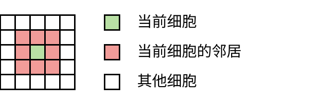
- 计算过程包括根据细胞的邻居改变细胞的状态，遵循以下规则：
- 如果一个细胞是空的，那么当且仅当它在前一步的三个邻居是填充的时，它才会变成填充的，否则它保持为空。
- 如果一个细胞是填充的，那么当且仅当它在前一步的两个或三个邻居是填充的时，它才会保持填充，否则它会变成空的。
- 这些规则被称为 B3/S23（出生 3 / 生存 2 或 3）。
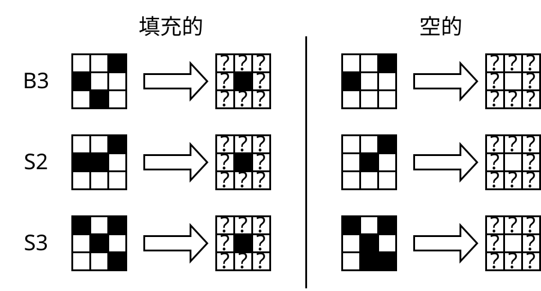
在下面的交互式可视化中，我们可以看到这个细胞自动机是如何对随机分布的填充和空细胞进行演化的：
你可以在更高级的模拟器中自己玩这个游戏，例如在 conwaylife.com [10] 上。
#2惊人能力
在这个自动机中，我们可以构建大量的机制。以下是其中一些例子。
第一个例子是上面的可视化中的“滑翔机”。这种机制会沿着对角线移动。可以说，它类似于光子。
我们也可以制作一个这样的“滑翔机”生成器：

“生命游戏”细胞自动机是图灵完备的，这意味着我们可以用它来构建一台计算机或图灵机。以下是一个例子（包含交互式模拟的来源：[11]）：

png
在交互式可视化 oimo.io/works/life [12]（手机也能运行）中，“生命游戏”在自身上进行模拟，既深入到无限小，又扩展到无限大：

png
约翰·冯·诺依曼设计了一个细胞自动机及其内部机制，可以自我复制。下面的图片展示了第二个自动机如何几乎完成了第三个自动机的构建；向右延伸的线条是遗传信息，它与机器的身体一起被复制。

png
蒂姆·哈顿 [13] 开发了一种人工化学，在这个化学系统中，他设计了各种元素以及元素之间的相互作用，以组装一个能够繁殖的人工细胞：
这虽然不是细胞自动机，但很容易建立在这个基础上，作者正在继续以细胞自动机的形式发展这个想法[14]：

png
我展示了所有这一切，是为了让你相信细胞自动机不仅仅是玩具，而是一个值得作为基本物理学类比的严肃概念。
#2与物理学的类比
细胞自动机是“玩具物理学”的极好例子，我们可以自下而上地理解它。在现实世界中，我们观察到复杂的现象，只能猜测底层原理（这是物理学家在做的事情）。在细胞自动机的世界里，情况正好相反：底层原理是已知的，而复杂系统的行为才是研究对象。
“生命游戏”自动机具有许多有趣的性质：
- 物理规律和物质是分开的。
- 物质可以随意编辑：绘制、复制、粘贴、删除。
- 我们可以对任何修改过的物质运行模拟。
- 存在一个初始时刻。
- 时间是物理规律的计算，时间点是网格状态的离散截面。
- 物理规律是局部的，也就是说，它们只作用于空间的某个区域，没有远程作用，因此，自然而然地，会出现一个最大允许速度，类似于我们世界中的光速。
但这个自动机也与我们的物理学存在一些差异：
- 没有守恒定律（例如，细胞的数量），但对于那些喜欢守恒定律的人来说，可以找到具有守恒定律的细胞自动机。
- 时间只能向前模拟（无法向后），因为过去的时刻可以从 0 到无穷多个。这并不一定是我们物理学的性质，我们的物理学可能是可逆的（可逆的自动机也存在）。
接下来，我们将假设我们的物理学在最基础层面上_类似于某种细胞自动机_（有很大的假设，但为了支持这一点，我将在后面详细解释）。也就是说，上面描述的性质适用于我们的物理学。
即使我们的物理学不像细胞自动机，它仍然是一个很好的起点，因为了解它与细胞自动机的具体差异也是很重要的。
#关于物理式模拟的思维实验
#2实验描述
假设在遥远的未来，我们已经发展成为一个能够利用整个银河系能量的文明，并且建造了一个像太阳系一样大小的超级计算机，它能够最大限度地利用每个普朗克长度。
然后，我们开发了一套简单的物理模拟规则，它是根据我们自己的物理学设计的，但并不完全相同。这样做是为了避免我们的物理学中包含大量的冗余和奇怪之处，例如量子力学和相对论。我们设计这套物理学规则，使其化学性质足够丰富，以至于有可能在其中孕育和自发产生生命。
由于我们希望在这台计算机上运行这个模拟，我们有一些限制。我们的模拟必须是：
- 离散的，
- 有限的，
- 确定性的，
- 可停止的（对于每个步骤）。
我还想加上一个限制，即在模拟中，我们只能干预初始条件，而且不能再干预其他任何事情。
在我们深入探讨这个实验之前，让我们澄清每个术语的含义。
#2离散物理学
已知两种类型的空间：连续空间和离散空间。

png

png
有限长度的离散空间可以被划分为有限数量的基本元素。有限长度的连续空间包含与区间 (-∞; +∞) 中的数字一样多的数字，也就是说，它是无限可分的，同时每个数字都有无限数量的小数位。
显然，我们不可能直接将连续空间塞进计算机。因此，我们所有的模拟都处理有限数量的离散对象。当我们模拟物理学时，我们使用离散近似。
不过，离散性和连续性之间存在着有趣的联系。例如，关于波（振动、周期）运行的规律是基于物质由连续空间构成这一理念构建的。但我们知道，所有液体、气体和固体都是由离散的原子构成的，只是原子数量非常多而已。因此，一些连续的物理规律虽然很漂亮，但实际上只是对基于离散基础的规律的近似。
同样，我们可以假设量子力学也是以类似的方式运作的，但这只是一个假设，并不一定正确。在我们的思维实验中，我们希望拥有一个在最基础层面上是离散的物理学，同时又不影响它在更大尺度上看起来像连续空间的可能性。
#2有限物理学
这里很简单——我们的模拟空间必须是有限的，因为我们无法处理无限数量的对象。对于我们的实验来说，我们只需要选择一个很大的距离就足够了。
#2确定性物理学
确定性 是指一个过程总是会为给定的初始条件产生唯一的结果，无论运行多少次都一样。
确定性意味着模拟的未来是明确定义的，其中不存在任何基本的随机性。这是一个合理的条件，因为计算机只能执行确定性的计算，它们无法处理绝对随机性。
有些人可能会说，数据竞争、未初始化内存和宇宙射线可能是绝对随机性的来源。我们约定，在思维实验中，所有代码都在理想环境中的一台单线程虚拟机上运行，并且为它分配的所有新内存都会预先清零。因此，我们只讨论确定性的模拟。
我们世界中的过程看起来是确定性的，尽管我们很难预测某些事件。确定性的过程也可能表现出混沌。因此，一个确定性的世界可能再次与我们的世界相似，这个条件并没有削弱我们的物理模拟。
关于完全随机过程的模拟，我们将在后面的章节中讨论。
#2可停止物理学
这绝不意味着必须存在一个步骤，在这个步骤之后模拟应该停止（例如，热寂），而是意味着模拟的每个步骤都应该在有限且可预测的步骤数内完成。这意味着在模拟一个步骤的计算过程中，不应该出现死循环或类似情况。这个条件是必要的，因为我们没有必要运行一个模拟，它可能在某个有趣的地方陷入死循环，然后不再产生任何结果。
另外，这个条件也是必要的，因为我们不想解决停机问题[16]（关于这个问题有一个很好的视频：[17]），而这个问题在一般情况下是无法解决的。
#2运行模拟
看起来创建这样的物理学应该不是不可能的。因此，在我们的思维实验中，我们找到了一个合适的候选者。当然，你可以不同意创建这种物理学是可能的。
然后，我们在这个超级计算机上，在某个有限的空间内运行这套物理学，并等待生命在其中自发产生。如果生命没有产生，我们可以稍微调整一下初始条件，调整一下所需原子的数量，或者将星云放置在与恒星的适当距离，以使其位于宜居带等等。
假设我们找到了产生生命的初始条件，然后我们进行长时间的模拟，等待生命进化到能够使用某种语言进行交流的智慧生物。
这些生物一定有某种形式的自我保存本能、性吸引、对食物的愉悦和对身体损伤的痛苦。因为这是拥有大脑的个体生物进化的合理路径。没有这些特征的生物很可能在生存方面效率较低，并且会被进化淘汰。
请停下来，回答以下问题。最好还能解释你的答案。
你认为这些生物有感觉吗？它们能观察自己的世界吗？它们有主观体验吗？它们是活的吗？
如果你认为它们没有感觉，那么你认为模拟需要具备什么属性才能让你认为它们有感觉？
对这个问题的答案将决定你如何理解接下来的叙述。
我之所以如此详细地描述这个模拟，是为了让你的对这些生物的认识尽可能地接近人类，但同时又不直接使用我们自己的世界，因为我们不知道我们能否成功地模拟它。关键在于，所有描述的内容看起来都是假设上可能的。因为，到目前为止，我们还没有发现任何基本规律禁止物理模拟中的生物拥有智慧或感觉。
我希望你对这些生物有感觉这一问题回答是肯定的。论据“它们没有任何感觉，仅仅因为我知道它们存在于计算机中”过于懒惰。我们需要更聪明地试图反驳这一点。
如果你不同意，也没关系。接下来，我会考虑这种观点。
假设你同意这些生物是有生命的，它们有感觉，能够讨论这个话题并思考关于神的疑问，以及他们是否生活在模拟世界中。我们不会以任何方式影响它们的世界，因此它们无法理解我们是什么，也没有理由怀疑自己物理世界的真实性和公正性。
生命是否可能在模拟中自发产生？
#2如果我们停止模拟会发生什么？
你认为如果我们停止模拟会发生什么？模拟中的生物会死亡吗？还是它们不会死，而是不再感知自己的生命？或者它们会以某种神奇的方式继续生存？
当然，你会说它们会死，因为还能怎样呢？当我们模拟它们时，它们就活着；当我们关闭它们时，它们就不再活着。很简单。但事实并非如此。我认为，在关闭模拟后，这些生物会继续生存。
正如我之前所说，我们的模拟有一些基本的限制，没有这些限制，我们就无法在计算机上运行它，那就是确定性。确定性意味着，如果给定初始条件并且之后没有任何干预程序，那么程序将只产生一个结果。现在，问题是：如果未来是唯一的，那么我们为什么要模拟它呢？我们的模拟有什么改变吗？我们无法以任何方式影响未来，它无论如何都会是它将要成为的样子。
如果你对此还不够了解，那就再进行几个思维实验：
- 如果我们删除所有模拟结果并从头开始重新模拟，我们将获得完全相同的結果。
- 如果我们暂停模拟，并在十亿年后继续，模拟中的生物不会感受到任何变化。它们的时间流逝由它们宇宙的内部规律决定。我们存在于它们的时间之外，而它们存在于我们的时间之外。
- 如果我们在多台计算机上同时运行这个模拟，对于生物来说，什么都不会改变。
- 如果模拟是可逆的，我们以某种方式获得了未来非常遥远的时刻，那么，即使我们将它反向模拟，生物也不会感到自己在时间中倒流。
当然，这些可能还不够，接下来我会展示如何证明即使要求模拟它们的世界，它们仍然会活着。
#宇宙作为数字
好吧，我们同意，当我们在计算机上模拟它们时，这些生物是活着的，我们对于它们只有一个未来这一点还不够。我们认为，它们的未来只在模拟之后才存在。
那么，让我们精确地说明我们拥有哪些东西，才能说这是它们曾经在这个时间段内活着的证据。我们拥有的所有东西都只是模拟算法和直到当前时刻的所有模拟步骤。我们认为，这些信息的存在这些信息的存在就等同于证明这些生物曾经活过。
假设我们完成了这个模拟，获得了所有数据并将其记录到一个大型硬盘上：首先是算法，然后是步骤 1，然后是步骤 2，...，步骤 N。好了，现在我们有了证明，证明它们在步骤 N 之前存活过。但硬盘上的数据始终是一些零和一的序列。我们可以将硬盘上的数据写成一个非常大的自然数。而这个自然数仍然是证明这些生物存活过的证据。
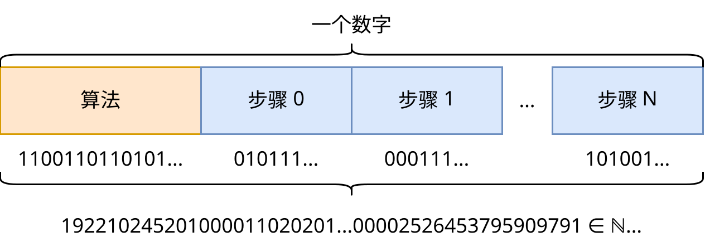
现在，有趣的部分来了：我们怎么知道所有自然数都存在呢？
既然所有自然数都存在，那么其中一定存在一个数字，这个数字就是我们用来编码模拟生物的模拟的数字。但其中也存在着这个模拟，但时间点是 +1。其中还存在着所有其他模拟，对于这个模拟中的任何时间点都存在。所有这些数字都等同于证明某些生物存活过的证据，而这些生物包含在这些模拟中。
由此，我们得出结论，任何可以在计算机上运行的模拟的结果都已以自然数的形式存在。 这也是这个概念的名称由来：宇宙作为数字。
自存 指的是一个宇宙自发存在，如果该宇宙中的生物能够观察到自己的存在和自己的宇宙。
之前我们同意，计算机模拟中的生物能够观察自己的宇宙。这意味着，这个宇宙至少对于自身来说是存在的。然后我们得出结论，这种存在等同于数字形式的存在。因此，所有自然数的存在都意味着所有可能的自存模拟宇宙的存在。这意味着，在所有存在生命的这些宇宙中，这些生命将观察到自己的宇宙。
我喜欢这个物理式模拟的例子，因为它不需要我们为“存在”下定义，它本身就如此显而易见，以至于我们应该从它推导出“存在”的定义。在这种情况下，我们推导出“自存”的定义。如果我们同意它们在计算机运行模拟时能够感知到它们在模拟中的生命，那么我们必须立即得出结论，在数字形式存在时，它们也能够感知到生命。
那么，当我们模拟某个世界时会发生什么呢？从这个角度来看，可以说，我们通过模拟并不是在创造世界，而是在观察一个已经存在的世界。 我们的计算能力被用来观察。而选择初始条件并不是“创造世界”，而是在无限多样的世界中寻找具有我们所需属性的世界。
而当我们停止模拟时，这些生物会继续自发存在。它们可以告诉它们宇宙中的其他生物，但不能告诉我们。我们无法观察到这一点，因为我们已经关闭了模拟。
#2人择原理
人择原理 指的是，宇宙如此完美地适应了生命的产生和人类作为观察者的出现，仅仅是因为在其他没有这样适应的宇宙中，观察者是不可能出现的。
Unasanu 与人择原理完全一致。我将它表述为：如果所有可能的宇宙都存在，那么观察者只会在可能产生观察者的那些宇宙中出现。
人择原理是必要的，因为物理学家观察到，最基本的常数完美地适应了我们的存在。如果其中一些常数减少或增加百分之一，那么我们所观察到的生命形式就不可能存在。关于这一点，你可以在《我们的数学宇宙》[18] 一书中了解更多信息。
#2错误计算论证
有人可能会反驳说：如果只有数字，那么计算从何而来？我可以将任何正确计算的宇宙写成错误的形式，而这在数字形式下也会存在。为什么计算就必须存在呢？
#3由所有物理规律计算
还有另一个类似的问题。如果宇宙可以被当前的物理规律计算，那么为什么它不能被其他物理规律计算呢？实际上，它确实被计算了，根据 unasanu，这些世界确实存在。让我们以“生命游戏”为例。在下面的插图中，展示了同一个网格是如何被不同的规则计算的：
尝试点击“开始”，然后每秒点击一次“从 B3/S23 复制”。你会发现，来自 B3/S23 的任何状态都可以被其他任何规则计算出来，这在 unasanu 框架下是存在的。
而我在这里只展示了一小部分（可以被 B/S 符号表示的规则），实际上，存在无限多种方法来计算这个具有两个状态的细胞网格的下一步。
显然，我们可以将这个网格作为所有可能规则进行计算的基础。对于每个时间点和每个可以构建的规则，都是如此。
同样，没有任何东西阻止我们获取这个网格的所有可能变体，并使用原始规则来计算它们。
所有这一切根据 unasanu 都存在，并且有很多推论，我们将在后面进行讨论。
那么为什么我们没有观察到我们的宇宙被随机的物理规律计算，而是在观察某种计算呢？
#3人择过滤
这可以用这样一个事实来解释：正是观察者维持了宇宙规律的稳定性，确保了计算和特定物理规律的稳定性，以便观察者自身能够存在。如何实现呢？
首先，让我们考虑错误计算论证。如果宇宙不受任何规律的计算，那么其中就不会有观察者来观察它。因为观察本身就是一种计算。而如果宇宙服从某些规律，那么它就可能存在观察者。因此，观察者只能观察到可计算的宇宙。
现在让我们谈论所有可能的物理规律，它们也被观察者维持稳定。更确切地说，观察者只观察到稳定的物理规律。因为，如果用其他物理规律来计算大脑中的原子，大脑可能停止工作，观察者将无法在这样的宇宙中观察任何东西。
在某种程度上，这类似于人择原理，只是更基本，并且发生在每一个时间点，而不是只发生在宇宙诞生或观察者在合适的宇宙中诞生时。我建议引入一个术语来描述它。
人择过滤 指的是，观察者能够过滤掉那些没有进行计算或错误计算的宇宙，以及那些不可能发生或存在观察者的宇宙。
接下来，我们将看到人择过滤适用于一些类似的论证，但并不适用于其他论证。
#3假真空
在物理学中，存在一种物质状态，称为“假真空”。它有可能出现。如果它在宇宙中的某个点出现，它就会以光速向各个方向传播，摧毁它碰到的所有东西。没有人能够观察到假真空的存在，因为他们的大脑运作太慢，在意识到假真空之前就会死去，而关于假真空的信息无法超过光速。
因此，假真空是人择过滤的例子。因为，对于那些出现假真空的宇宙来说，所有生物都死了，没有意识到它的存在，而其他那些只有一个原子不同的宇宙，没有出现假真空，则继续存在。因此，假真空可以通过人择过滤实现。
如果宇宙规律只在宇宙诞生时或观察者在合适的宇宙中诞生时被观察者过滤一次，那么假真空则是被观察者在每个时间点过滤。如果科学家发现，假真空在可观测宇宙中出现的概率很高，但它从未出现，我们也继续活着，那么，从 unasanu 的角度来看，这没有任何矛盾。
顺便说一句，当我们创造出万物理论，并且突然发现基于它的任何模拟都会在一段时间后被假真空摧毁，这可能会很有趣。:)
如果我们能够创造出万物理论，并且根据该理论，我们本应该早就因假真空或类似的瞬间毁灭所有存在的现象而死亡，那么，这并不意味着该理论是错误的。
#2永恒主义
一些读者可能会问：“时间怎么办？”之前，我隐含地假设宇宙及其时间是以静态数据块的形式存在的，完全忽略了我们通过时间流逝而感受到的动力学。这种观点被称为永恒主义。
永恒主义 是一种关于时间的观点，认为未来的事件已经存在，客观“时间流逝”并不存在，并且整个时空可以被表示为一个静态的不可改变的“块”[19]。
我认为，对于模拟来说，永恒主义是对时间的正确解释。在接下来的章节中，我将把我们的宇宙归类为可以在计算机上模拟的宇宙，因此，永恒主义也应该适用于我们所感知的时间。让我们来探讨一下永恒主义在模拟中的应用，因为它是一个 unasanu 框架中的重要部分。
人类的时间是如何运作的？ 我们在当前时间点只有对过去的记忆和对现在的感知。我们无法直接感知过去或未来。我们可以根据一些物理物体，比如电影记录、考古文物以及我们自己的记忆，了解过去可能是什么样。我们不得不相信所有这些。我们也只能与我们同一时间的人交流，因为这是物理规律。从未来存在人类这一事实并不能推导出我们必须有能力与他们互动，除非我们活到那个时候。
为什么我们感觉时间在逐渐流逝，而不是直接感受到一个随机的未来时刻，如果它已经存在了呢？ 因为，根据物理规律和我们大脑的结构，为了让 20 岁的。
人感觉到一些东西，他必须先经历这 20 年并记住它们。所以你很可能现在就是来自某个随机未来时刻的大脑（很可能是在你死亡前的最后一刻），只是它记得自己是如何经历过去所有时刻的，你才会觉得你现在还活着。
模拟中的时间是如何运作的？ 在离散模拟中，未来的状态是通过从过去的狀態原子地计算出来的。在模拟内部，不可能感受到“模拟步骤之间”的时间，因为模拟的内部规律本身只能处理完成的计算状态。也就是说，对于模拟来说，不存在任何基本的动力学，只有不同的静态时间点，它们通过逻辑关系联系在一起，观察者将它们解释为动态变化的时间。
作为对模拟中永恒主义的“反驳”，我们可以假设以下情况：我们把一个公理作为前提，即我们世界中的时间不能还原为静态结构。那么，如果我们认为某个模拟中存在类似于我们自己的时间，那么定义它的唯一方法是将其绑定到我们的时间。在这种情况下，模拟中的时间与我们的时间一起流逝，直到我们完成计算。
我们可以用两种方法来反驳这一点，表明模拟中的“当前”时刻并不是唯一的：
- 创建这个模拟的副本，并以一秒的延迟运行它。那么，哪个时间才是“当前”时间？模拟中的生物在“此时此刻”感受到了什么时间？
- 存在一些模拟类别，比如“可逆”模拟。它们不仅可以向前模拟，也可以向后模拟。顺便说一句，量子力学是可逆的，所以这种模拟可能与我们的宇宙非常相似。那么，如果我们创建这个模拟的副本，并同时开始向前和向后模拟它呢？哪个时刻是当前时刻？
因此，我们无法以任何方式反驳对于计算机模拟来说，时间无法以静态结构形式存在的观点。我们甚至可以说，模拟不能用任何动态的东西来描述，只能用静态的块来描述。这并没有出现任何矛盾，即使将其应用到我们的宇宙中也是如此。因此，时间的本质属性不是持续运动，而是它通过一些物理规律连接不同的（时间）信息层。
我们还可以说，时间不是作为某种全局结构存在的，所有模拟都服从它，而是相反，时间存在于模拟内部。
此外，永恒主义是一个不可验证和不可证伪的论断，因为它只是对确定性宇宙中时间的解释。
另外，永恒主义似乎暗示着绝对的确定性，并要求未来是唯一的。但永恒主义与具有多种未来的宇宙和绝对随机性完全兼容，后面将对此进行说明。我们只需要将最终的“时空”块不看作是静态的香肠，而看作是静态的树。:)
#2与模拟的交互
从现在开始，之前施加的限制会逐渐放松。
我说过，在我的思维实验中，我建议不要干预模拟。如果我们取消这个限制会怎么样？模拟会变成非确定性的吗？不会。
假设我们已经模拟到了第 N 步，并且想在原子编辑器中删除发动战争的极权主义统治者。之后，模拟中的生物感到困惑，但同时也很高兴。但什么是干预模拟呢？这是一种发送给模拟程序的一些动作序列。这意味着，这种动作序列也可以用数字来编码。
如果我们记录下我们所有的干预，然后将它们附加到程序旁边，并指示它们在模拟的适当时间发送出去，那么我们就可以再次获得一个完全确定性的模拟。我们可以一遍又一遍地运行它，它会产生相同的结果，尽管我们仍然将它解释为一个被干预的结果。
所有这些可能的干预也可以用数字编码，并附加到普通模拟程序的数字旁边。因此，所有包含所有可能干预的可能宇宙都存在，甚至无需直接干预。
但同时，我们不能忘记，正如存在包含所有可能干预的宇宙一样，也继续存在一个没有干预的宇宙。
#2泰格马克的数学结构
之前，我隐含地假设模拟具有以下结构：
- 存在模拟的某个初始状态
O。 - 存在一个计算一个步骤的函数/程序
F，它对于模拟的每个状态都会返回模拟的下一个状态，并且答案始终存在。 - 模拟的本质是执行以下算法：
- T = F(O)
- T = F(T)
- T = F(T)
- ...
因此，在模拟中，“时间流逝”，因为我们把计算中的一个步骤等同于模拟中的一个时间步骤。并且在整个宇宙中，时间是全局存在的。
但实际上，这种对时间的解释是幼稚的，它不允许存在更加复杂的宇宙，例如：
- 具有多维时间的宇宙（关于这个话题有一篇很好的文章：[15]），
- 具有相对论的我们的宇宙，
- 具有时间旅行的宇宙。
幼稚的时间模型 指的是一种时间模型，其中时间是离散的，并且在整个宇宙中是全局存在的，并且下一步始终可以从前一步计算出来。
因此，马克斯·泰格马克的数学宇宙假说[1] 登场了，在这个假说中，他对这个问题进行了更加深刻的探讨，他认为在物理意义上，任何可以用数学结构描述的宇宙都存在。
数学结构 指的是一组抽象实体及其之间的关系。
众所周知，所有幼稚的模拟都是数学结构的子集，因为程序的运行结果定义了一个抽象实体，而程序本身定义了这些实体之间的关系。我们还确切地知道，数学结构集合包含那些可以通过计算来验证其时空部分满足其自身规律的宇宙。因此，在这种概念中，计算不是用来观察世界（计算它的步骤），而是用来检查某个世界是否满足其自身规律，或者用来指定它。
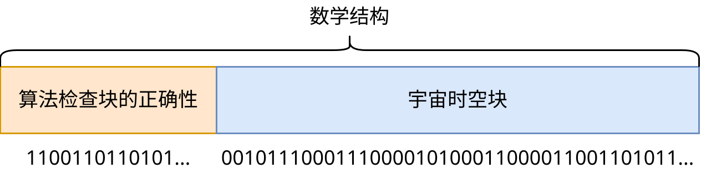
也许这种描述不太容易理解，所以我想要展示一个看起来是通过幼稚方法计算的宇宙的例子，但实际上并非如此。一个明显的例子是：时间旅行，但无法改变过去。我知道两个很好的例子：关于哈利·波特的书籍和电影《信条》。想象一下，你要如何模拟一个允许时间旅行的世界，但时间旅行的规则是过去保持不变？你需要在考虑到未来的情况下模拟过去，在考虑到过去的情况下模拟未来，而且它们必须相互匹配。我们目前还没有办法计算具有这种时间旅行规律的宇宙，因此，唯一可能的方法是遍历所有可能的宇宙（包括所有可能的未来和过去），并检查哪些宇宙满足所需的规律。也就是说，整个宇宙只能以“所有时间一次”的形式计算出来。但显然，在这个宇宙中的生物会感受到自己的生命，并对他们时间旅行的规律感到震惊。你可以在文章“因果宇宙”[20] 中了解更多关于这方面的信息。
顺便说一句，有一篇文章名为“宇宙不是一台计算机”[21]，它建议以不同的方式看待描述物理学的方法，并提出了一种计算“所有时间一次”的方法。
另一个非幼稚宇宙的例子是我们的宇宙，它遵循相对论。我们没有一个统一的全局时间。在空间的每个区域，时间都以不同的速度流逝。因此，整个宇宙必须被表示为一个时空块，其中时间只是这个块的各个部分之间的关系。
在这两个例子中，宇宙都可以用局部幼稚性来近似化。对于第一个宇宙，我们忽略了时间旅行，而对于第二个宇宙，我们忽略了时间膨胀。正因为如此，我将在后面继续使用幼稚模拟的术语进行讨论，因为这样做更简单，并且可以很好地近似地描述许多可能的这类宇宙，如果不是所有的话。但这可能是一个错误。
我们的物理规律是否可以归结为局部幼稚性？
如果我们的宇宙无法以幼稚的方式计算，甚至在局部上也无法用幼稚的计算近似化，那么本文中的许多推论将受到影响。
开发一种将可计算的宇宙描述为“数学结构”的格式。确定我们是否可以以这种格式记录我们的宇宙。
#2构建原则
如果所有可能的宇宙都存在，那么是否也存在“魔戒”和“星球大战”的宇宙，以及来自动漫的穿越者宇宙？为了回答这些问题，我引入了以下原则。
构建原则 指的是，如果我们能够提出一种构建宇宙及其物理规律的方法，那么这种宇宙就存在。
例如，如果我们有一个模拟我们宇宙的程序，那么（理论上）我们可以获取它，并构建一个世界，在这个世界中，当前时刻一半的人类被替换成了空气中的原子。因此，这样的宇宙在物理上是存在的，并且有人会感受到自己生活在这样的荒谬之中。
这里的“构建”指的是，我们将使用某个程序（例如，“11D 超级原子编辑器”），将我们当前的时刻加载到该程序中，对其进行编辑，然后从编辑过的时刻开始模拟修改后的原子集合。
我们能否以类似的方式创建精确的“魔戒”宇宙呢？极有可能不能。首先，“魔戒”宇宙的物理规律必须与我们的宇宙大致相同，但要进行一些修改以实现魔法的存在，但我们还不能确定是否能够找到这样的物理规律。然后，我们希望这个宇宙像我们的宇宙一样，是自发产生的，从大爆炸开始，然后是演化等等。这是一个巨大的限制，它将阻碍我们找到这样的宇宙。之后，我们希望在这个宇宙中完全重复故事情节。也许甚至所有生物都像电影中的那样。总而言之，所有这些限制最终将构成一个关于宇宙初始状态的庞大方程组。而众所周知，并非所有方程组都有解。仅仅是因为，如果我们绘制它们的图形，它们将不会相交。例如，以下示例：

png
这里，每个点都是一个宇宙，而图形展示的是满足一个条件的宇宙。 “魔戒”宇宙包含许多条件，因此，这个宇宙必须是所有条件的所有图形的交集。
但是，这里有一些点最接近所有这些条件：
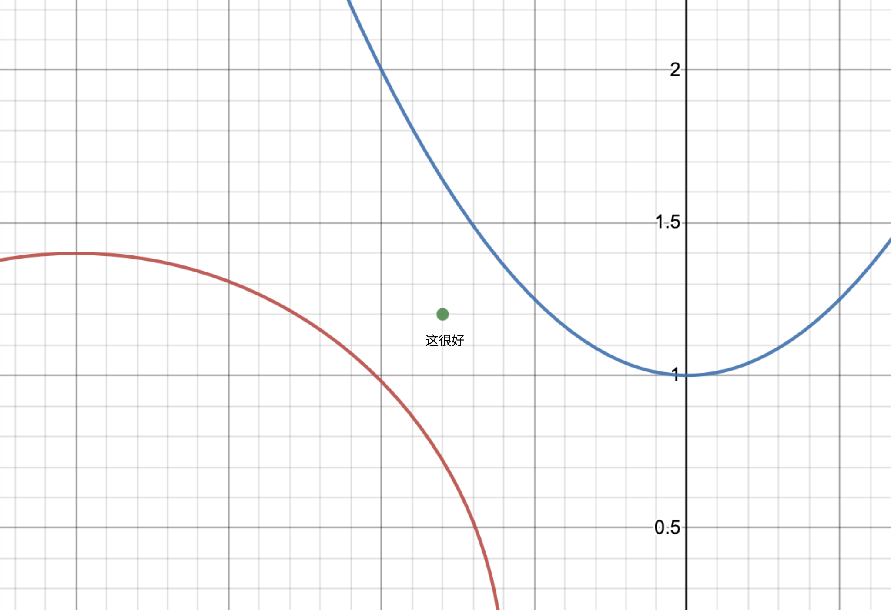
这意味着，我们可以找到近似地满足我们条件的宇宙。
因此，“魔戒”宇宙不太可能完全按照书中描述或电影中展现的那样存在，它包含了我们所有可以想象或无法想象的条件。但肯定存在着与它非常接近的宇宙，这些宇宙施加的限制少得多，我们做出的妥协越多，结果就越自然，这些宇宙的范围就越广。也许，更自然的宇宙会比“魔戒”宇宙更有趣，所以损失并不大。
但没有任何东西阻止我们构建一个穿越者的宇宙。我们可以获取一个存在于中世纪的拥有人类的世界，然后在他们死亡后将一个来自未来的人类插入其中，继续模拟这样的宇宙，看看会发生什么。因此，从这个角度来看，穿越者的宇宙并非不可能。尽管如此，你最喜欢的动漫中完全相同的副本可能并不存在。
在本章中，我隐含地假设我们的宇宙可以在计算机上模拟，并且服从 unasanu。但这是一个独立的、重要的问题，我们将在后面进行讨论。为了方便理解，我将隐含地假设这一点。你始终可以将这些例子推广到其他服从 unasunu 的宇宙。
此外，构建原则是最有可能被反驳的原则，因为我们还没有找到万物理论，所以我们无法确定任何原子的组合是否都存在。如果我们无法创建我们宇宙的副本，在这个副本中，一半的人类被替换成空气呢？如果这样做会违反某些规律呢？对于像康威的“生命游戏”这样的简单幼稚宇宙，我们可以断言这一点，但对于所有类型的宇宙来说，这可能并不适用。
当然，如果我们的宇宙无法以幼稚的方式计算，那么构建原则就无法应用于某些情况。
简而言之，根据 unasanu，存在的不是所有可以想象的世界，而是所有可以构建的世界。
#2基质无关性
如果你觉得宇宙能够在自然数上被计算出来是一件令人惊讶的事情，那么我想让你了解一个原则，它使这种可能性更加可信。
基质无关性 是指计算的一个属性，它意味着计算的结果不依赖于计算的执行媒介。
无论以何种方式计算你所在的宇宙，你都不会感觉到任何区别。因此，宇宙能够在静态数字上被计算出来就不那么令人惊讶了。
我认为，这是计算中最强大的属性之一。确定性计算的结果不依赖于我们执行它的图灵完备基质：
- 计算机，
- 巴贝奇分析机，
- 由 3000 万人组成的活体计算机（向刘慈欣致敬！），
- 《我的世界》游戏中的红石电路，
- 或者如果某个不朽的生物根据最简单的规则（110 型自动机是图灵完备的[22]）在一个 110 型细胞自动机上进行计算，通过移动石头来完成这些计算。
是的，我引用了 xkcd
图片可点击。

png
#2计算本身是观察者的解释
假设我们假设只存在那些被显式地模拟在我们计算机上的宇宙。
让我们进行以下思维实验：我们运行了这样一个模拟，里面的虚拟生物在过着它们自己的生活，然后人类灭绝了，数十亿年后，外星人来到这里，看看发生了什么。如果他们无法永远地理解这台计算机执行的计算呢？由于这个原因，虚拟宇宙会消失吗？如果宇宙中存在大量计算机，它们在进行所有可能的模拟，只是我们还没有找到正确的解释呢？
#2为什么所有自然数都存在
以下是对 unasanu 的另一个反驳：为什么所有自然数都必须自发存在？如果模拟宇宙只存在是因为编码它的数字存储在我们的计算机中呢？
首先，自然数是最自然的、最显而易见和最简单的。我更容易相信自然数本身的存在，而不是相信带有无限小数位的实数的存在。
但即使这一点还不够，即使我们认为只有被某个物理对象编码的数字才存在，那么即使在我们的有限宇宙中，也存在着相当多的数字。例如，我们可以拿一块街边的石头，逐层扫描它，然后将所有图像拼凑成一个非常大的数字。我们可以从许多不同的角度扫描每块石头。我们可以以各种不同的顺序对所有这些照片进行排序，以获得更多数字。
如果我们考虑使用许多不同角度扫描的石头的数字来构建更长的数字，那么我们就能获得更多的数字。我们可以对石头的顺序进行无限多的排列，并且对于每块石头，我们可以选择各种不同的角度。因此，在我们的宇宙中，我们肯定可以找到所有达到一定大小的数字。
这意味着，我们的宇宙中编码了大量已经计算好的宇宙。我们甚至可以说，从我们宇宙的存在这一事实可以推导出大量其他宇宙的存在。以前，我用这种方式证明了其他宇宙的存在，并将其称为“世界产生的想法”，但我现在发现自然数更加基础，因此不再需要这种东西了。
顺便说一句，格雷格·伊根的“尘埃理论”[2] 也是以类似的方式表述的，他是在他的小说《排列之城》中描述的这个理论。
#2无限时间和无限内存
我们可以证明，对于以数字形式存在的模拟来说，它们可以使用无限的内存、无限的时间，因此拥有无限的计算能力。
首先，无限时间是如何实现的？如果我们在模拟代码中没有限制下一个步骤的存在，也就是说，对于任何当前步骤来说，总是存在下一个步骤，那么对于编码从 1 到 N 的步骤的任何数字来说，始终可以构建一个编码从 1 到 N + 1 的步骤的数字。因此，这里时间没有任何限制，模拟形式的宇宙可以无限期地存在。
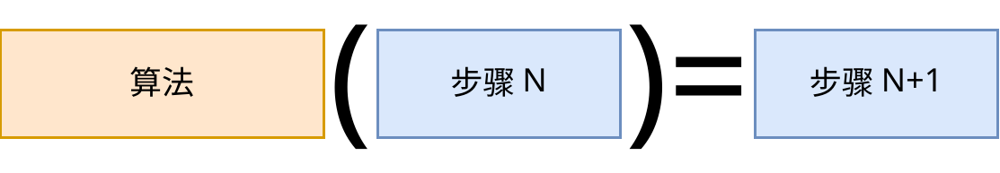
借助无限时间，我们可以实现任意高的计算速度，只需将观察计算的意识暂停即可。
关于无限内存，情况稍微复杂一些。假设我们把内存理解为编码当前步骤的数字的长度。例如，我们的代码是以这样一种方式编写的，即算法会检查前一个步骤是否与当前步骤相关。那么，当我们请求内存时，我们会找到下一个数字，算法会检查这个数字是否是我们需要的。当内存不足时，算法可能会拒绝编码这个模拟的数字。当内存足够时，算法会接受它。因此，无论我们请求多少内存，始终存在一个包含所需数量内存的数字。
因此，更准确地说，我们可以请求任意多的内存，但每次都只有有限数量。
无限时间和无限内存是一个非常令人愉快的特性，我们将在后面积极地利用它们。
#这是否适用于我们的宇宙
之前，我之所以对模拟施加如此多的限制，并且在思维实验的例子中使用了另一种可计算的物理学，是因为我们不知道我们的宇宙在多大程度上能够在计算机中存在，它在多大程度上是可计算的。问题不仅在于我们不知道万物理论，无法回答这个问题，还在于我们现在了解到了一些看似反驳这种可能性了解到了一些看似反驳这种可能性的现象。让我们看看已知的难题。
我们的物理规律是否可以计算？
#2模拟无限宇宙
假设我们的宇宙是无限的。如果是这样，那么我们就无法在计算机上模拟它了吗？不，因为我们有一个关于信息传播最大速度的限制——光速。
让我们考虑一下，为了获得当前时刻的地球，需要进行哪些计算？我们需要从大爆炸中获取某个有限的空间部分，并将其模拟到当前时刻。同时，我们选择一个足够大的初始空间部分，以确保来自宇宙边缘的信息无法在当前时刻到达地球。这样，在整个模拟历史中，我们会看到越来越多的信息从更遥远的恒星到达我们，就好像我们的宇宙是无限的一样。但如果我们让这个模拟继续进行，那么到达地球的信息可能会表明，在某个地方存在着宇宙边缘，边缘之外没有任何计算。我们不能允许这种情况发生，因此，我们回到大爆炸，选择更大的空间部分，以便能够在时间上进行更长久的模拟，并且每次都这样操作。之前已经证明了我们拥有无限的内存和计算能力，所以这不是问题。
从数学角度来看，对于任何有限的时间点 T，我们都可以找到从大爆炸开始的某个有限的空间部分，以使在模拟到时刻 T 时，位于这个空间部分中心的观察者不会接收到有关宇宙是有限的信息。
我们从哪里知道大爆炸时刻的基本粒子的组织方式呢？数字形式下存在着所有可能的初始条件，所以这并不重要。
不过，这种方法无法应用于没有最大速度限制的无限宇宙。例如，它无法应用于具有牛顿引力的宇宙，因为牛顿引力是瞬时传播的，也就是说，它具有所谓的“超距作用”。而具有速度传播限制的宇宙的例子是康威的“生命游戏”，其中最大速度是每步 1 个格。
同时，我们还存在量子纠缠，它似乎能够以超光速传递信息。但这并非问题，因为这些粒子是在一起被创建的，然后我们把它们移动到宇宙中的某个位置以获取信息，由于它们不能以超光速运动，因此在有限时刻 T 之前，它们将从假定的中心移动到有限距离，因此，对于模拟来说，我们只需要选择更大的空间部分，以确保纠缠粒子也不会接收到有关宇宙边缘没有计算的信息。
这种模拟方法类似于数学分析中的极限：每个局部宇宙在某个时刻之后都会变得不正确，但越往后，它就越正确，而这个序列的极限就是我们想要得到的结果。让我们称之为极限转换模拟方法。
极限转换模拟方法 是一种模拟具有某种无限量的方法，通过不断地增加这个潜在无限量的大小来实现。
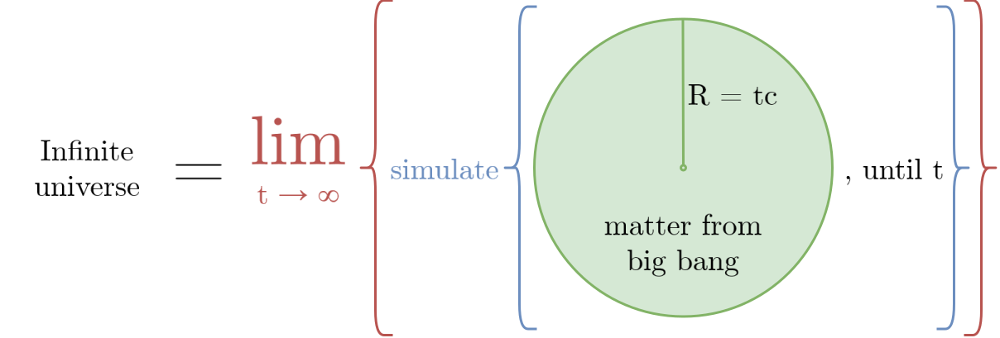
#2模拟连续空间
如我们所知，我们不可能直接将连续空间放入计算机模拟中。那么，人类如何才能在计算机上计算物理模拟呢？答案是近似化。
我们在计算机上遇到的第一个近似化是实数。我们不可能存储和处理具有无限小数位的真正实数。因此，实数是以近似的方式存储的——用某个有限的内存部分来存储。两种最常用的实数类型是 32 位（float）和 64 位（double），它们的处理方式直接在处理器中被编码。这些有限的数字在计算中容易受到舍入误差的影响（0.1 + 0.2 = 0.30000000000000004），因此，所有处理它们的算法都是为了最小化这些误差，并在输出中获得具有足够数量有效数字的合理结果。显然，64 位数字比 32 位数字更精确。还存在一些库用来创建任意大小（因此具有任意精度）的慢速实数，例如 1024 位、10000 位。这些数字可以在常规精度不足的计算中使用。
关于物理模拟的方法，存在有限元法（FEM）[24]，它允许我们在某个具有不同材料的空间内对微分方程进行数值求解。例如，我们希望求解热传导问题，该问题有一个非常简单的微分方程。对于热传导，我们认为在连续空间的每个点都有一个实数，表示温度。它的简化机制如下：
- 将空间划分成一个网格。

png
- 我们认为，在网格的每个顶点都存在着热的真实值，而热量在顶点之间从一个网格值均匀地过渡到另一个网格值。这样，我们得到了热的连续空间值，但这个连续空间被表示为有限元素的离散数字。

png
- 每个有限元素都可以用一个简单的方程来表示，如果我们将这个方程代入热传导的微分方程，那么对于整个空间，我们就可以得到一个线性代数方程组（SLAU），它很容易求解，并且针对它有很多已开发的方法。

png
- 在求解 SLAU 之后，我们得到了下一个时刻的每个空间点的热值。这不会是完美的解，但足够精确。它的性质在于，网格越细，精度就越高。

png

jpg
我们是否可以利用 FEM 来模拟我们的宇宙呢？完全可以。只是会引发关于计算精度的疑问。我们可以选择一个大小为普朗克长度的 1000 分之一的网格，这似乎足以观察我们的世界。
现在的问题是精度：如果我们的宇宙是用 FEM 模拟的，或者根本就是一个细胞自动机，我们是否能够通过实验来发现它？理论上，这可能是可能的，我们需要进行极其高能的实验，或者观察非常遥远的恒星，或者想出一些非常巧妙的现象组合。看起来，对于所有这些，我们都可以发现空间离散性的“人工痕迹”。
同时，一个简单的原则依然适用：任何实验都只能给出某种程度的真相。 如果我们进行了一个实验，在这个实验中，我们将一个质子的能量增加到一个星系的质量，然后将它与另一个具有同样能量的质子碰撞，并发现它们的碰撞结果与空间的连续性相一致，那么，这意味着空间在某个距离内看起来是连续的，即使这个距离小得难以置信。我们不知道是否能够设计出一个仅在空间完美连续的情况下才能运作的实验。
是否能够开发出一种连续空间系统，我们能够在其中进行一个实验，表明该系统是由完美的连续空间构成的？对实验的要求如下：它必须能够在该系统内部的智慧生物进行，并且实验必须使用有限的物质和能量，并且在有限时间内进行。
如果可以，那么我们的宇宙是否属于这种类型的连续空间？
好吧，假设我们的宇宙是使用 FEM 模拟的，并且具有难以置信的精度。但如果这种精度是有限的，那么，我们就可以进行一个实验，证明空间实际上是离散的。那么，是否可能存在一种模拟，在这种模拟中，这种实验是不可能的呢？是的，接下来我将证明这一点。
假设我们的宇宙可以用某个微分方程来描述，并且在标准模型中，每个粒子不是用一个点来表示，而是用某个场来表示。那么，我们可以将 FEM 应用于这个方程，并实现以下算法：
- 从
k等于 1 到 ∞ 进行迭代。- 实数的精度为 2k。
- 空间网格的大小为 X·2k。
- 时间网格的大小为 Y·2k。
- 使用给定精度的实数，根据给定空间和时间网格对整个宇宙进行 FEM 求解。
对于这个算法，每次循环 k 迭代时，我们都会将算法中所有元素的精度提高 2 倍。现在，假设模拟中的观察者想要进行一个实验，以验证其空间（或时间）在多大程度上是连续的。对于任何实验精度，始终存在一个 k，使得其实验结果表明其宇宙由连续空间构成。这又是极限转换模拟方法的另一种应用。
这对于存在宇宙热寂的情况尤其适用。在这种情况下，我们可以选择一个有限的 k，使得观察者在其宇宙存在的整个时间段内都无法以所需的精度进行实验。
这个算法对于混沌系统也同样有效，例如，三体问题或双摆：对于任何时间 t 和精度 eps，我们都可以找到一个 k，使得此时刻的坐标精度与 eps 相当。
因此，在某种意义上，具有连续空间或实数的宇宙也是可计算的，因此，根据 unasanu，它们也存在。
当然，我展示了这对于那些可以用微分方程描述的宇宙和那些可以利用 FEM 求解的宇宙来说是可行的，我并不知道哪些其他具有连续空间的宇宙是无法计算的。我认为，这已经是一个数学问题——确定哪些具有连续空间的宇宙是根据这个想法可以计算的，而哪些是不可以计算的。
例如，存在一个名为“物质的无限嵌套”[25] 的漂亮概念，它指出不存在任何基本粒子，所有粒子都是由它们自己的小宇宙组成的。我不确定是否可以用这种方法来模拟这样的宇宙。
确定哪些类型的无限和连续宇宙可以用 FEM 模拟，哪些可以用极限转换模拟方法模拟，以及我们所知的物理规律是否属于这些宇宙类别。
或者，我们可以说，具有连续空间的宇宙也自发存在，因为它们是确定性的，无论我们能否模拟它们。
不过，这里出现了一个小问题。如果实数严格地多于自然数，那么我们如何将连续空间宇宙塞进自然数中呢？答案很简单——可计算的实数构成一个可数集合。剩余的实数，它们构成了这个集合，并且多于自然数，是不可计算的。你可以在维基百科上阅读更多关于这一点的信息：“可计算数”[26]。
顺便说一句，我的极限转换方法在某种程度上类似于定义不可计算的“可接近数”（approachable number）的定义，这些数字被定义为可计算函数的极限。我从文章“一个不可算法近似化的可定义数字”[27] 中获取了这个概念。有趣的是，几乎所有已知的不可计算数的例子都是“可接近的”。同时，我们可以引入一个既不可计算又不可接近的实数。
#2绝对随机性
我们所知物理规律中的下一个难题是量子力学，以及它包含的绝对随机性和多元宇宙。我对量子力学在计算机模拟中存在哪些具体问题不太了解，所以让我们假设剩下的唯一问题是如何实现绝对随机性。
如我们所知，在计算机中无法获得绝对随机数，只能获得伪随机数，它是由某种算法计算出来的，或者，如果随机数生成器从外部环境获取数据。但当我们需要的不只是一个绝对随机数，而是一个具有绝对随机性的宇宙时，一切都会发生翻天覆地的变化。
假设我们有一个具有单个随机数生成器（RNG）的确定性宇宙，它会返回一个绝对随机的位——0 或 1。我们可以用以下方法模拟这样的宇宙：每次询问 RNG 数字时，我们只复制当前宇宙，并将一个宇宙的变体设置为 1，而另一个宇宙的变体设置为 0。这样，每个新的宇宙都会认为自己拥有一个绝对随机数。并且每次询问 RNG 数字时，宇宙的数量都会增加。
是的，为了模拟一个具有绝对随机性的宇宙，我们必须模拟多个宇宙，而不是一个宇宙。由于我们对内存和计算量没有任何限制，所以这并非问题。马克斯·泰格马克称之为“主观随机性”，我从他的书中借鉴了这个想法[18]。
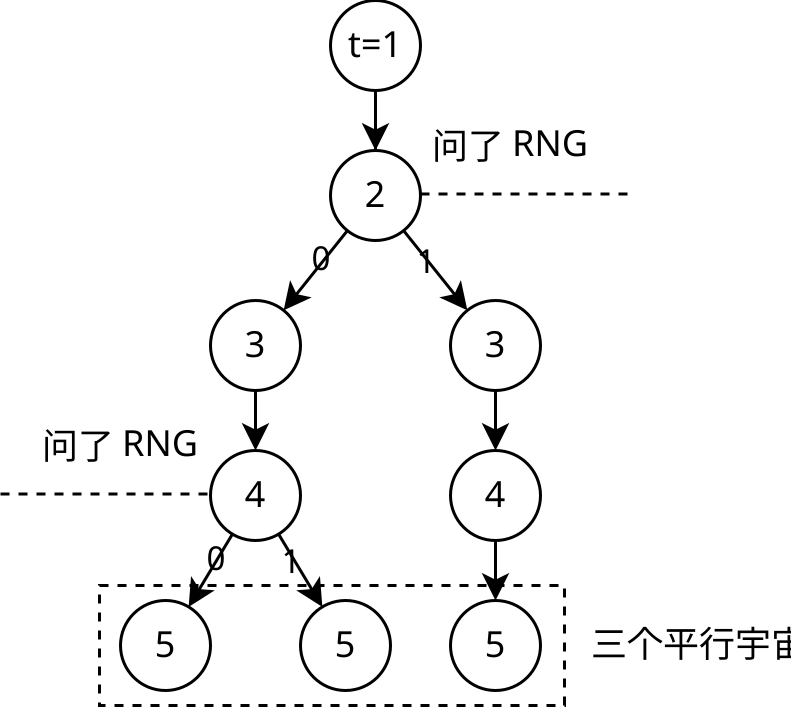
这是一个非常有趣的方法，让我们为它引入一个术语。
穷举模拟方法 是一种模拟宇宙的方法，其中包含一个不可计算或不可定义的函数，但该函数会输出有限数量的值，因此，我们可以简单地通过枚举该函数的所有值来模拟这个宇宙。
有趣的是，在所有这些变体中，一定存在着任何伪随机数生成算法。这就像是在所有可能的数字中，一定存在着能够进行计算的数字。
当然，在量子力学中，存在的不仅仅是绝对随机性，这些宇宙之间也以某种方式相互作用，因此，情况要复杂得多。然而，看起来，考虑到前面描述的内容，完全有可能计算它。如果我错了，并且量子力学中存在其他限制，禁止我们用计算机模拟它，请告诉我。
#2不可计算性
不可计算性是指某个对象的属性，它禁止我们用计算机计算它。所有已知的不可计算性的例子都需要具有无限小数位的实数，或者需要解决停机问题。
停机问题 是指确定一个程序是否会停止运行，或者会永远运行下去。
阿兰·图灵证明了，在逻辑上，不可能有一个程序能够在一般情况下解决所有程序的停机问题。如果可能的话，只能作为外部实体，它不受算法化的影响，或者以无限长的程序的形式存在。但对于每个程序来说，答案都是存在的——它要么停止，要么不停止。
如果我们能够解决停机问题，那么就可以利用它来证明某些类型的定理。例如，我们可以证明或反驳哥德巴赫猜想（3x + 1 问题）[28]：编写一个程序，它遍历所有数字，并查看每个数字最终会变成什么。如果它没有变成 1，那么我们就会停止程序。如果我们能够解决这个程序的停机问题，那么我们就可以明确地说出这个猜想是正确还是错误的。因此，拥有一个解决停机问题的机器对于数学研究来说将是极其方便的。
看起来，一个具有能够解决停机问题的物理现象的宇宙是不可能存在的。但接下来我会展示，事实并非如此。
最主要的论据是：能够解决停机问题的宇宙是确定性的。这意味着，无论我们是否模拟它，它的未来都是唯一的，并且其中的生物将度过它们的一生。但如果你对此感到不满意，那么还有另一种方法。
假设我们有一个具有单个停机问题的解决工具的确定性宇宙。我们将一个程序输入到这个工具中，它会输出一个答案——0 或 1，分别表示停止或不停止。现在，我们像往常一样模拟这个宇宙，但每次询问工具问题时，我们都会复制当前的宇宙，并将一个宇宙的输入设置为 0，另一个宇宙的输入设置为 1。并且每次都这样操作。这是一种穷举模拟方法。
有趣的是，在所有产生的平行宇宙中，只有一个是正确的，但我们无法计算出哪个是正确的。也就是说，在这些宇宙中的某个宇宙中，它的居民观察到他们的宇宙能够正确地解决停机问题。但在我看来，正如我们无法理解哪个宇宙是正确的，他们也无法确切地确定这一点。
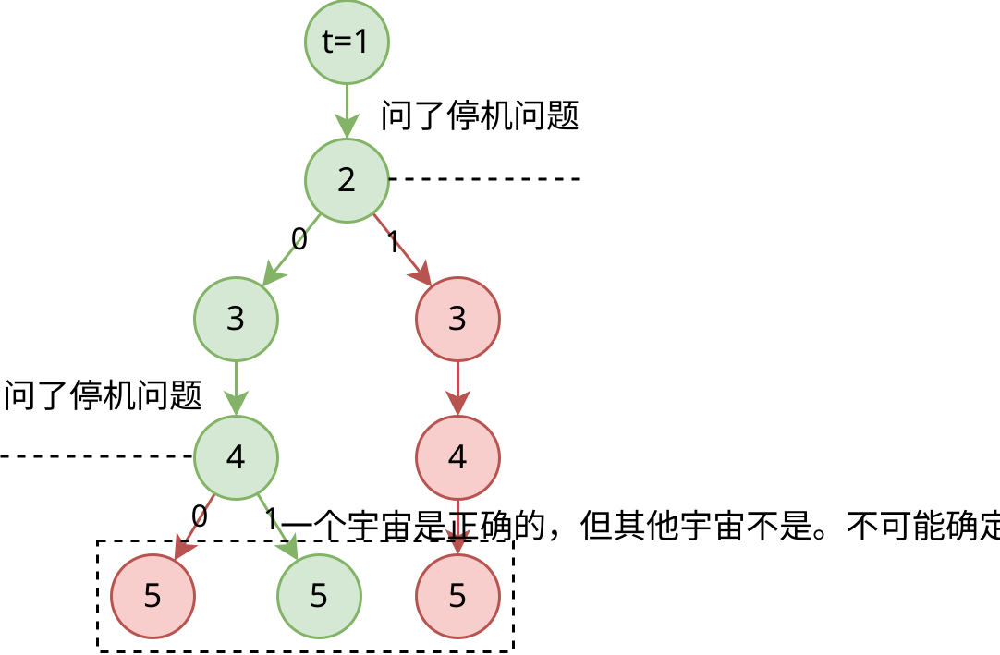
所以，即使在我们的物理规律或意识运作规律中存在能够解决停机问题的现象，它仍然可以作为一个计算机程序存在。
在这种情况下，类似于错误数字的论证，为了避免进入一个具有常规计算的宇宙，最好是让这个宇宙中观察者的意识也使用不可计算性，而不可计算性对于这个意识的运作至关重要。也就是说，物理规律的不可计算性应该受到人择过滤。据我们目前所知，我们的宇宙中的任何物理现象，以及人类的意识，都不需要解决停机问题才能存在。
如果存在其他类型的不可计算性，请告诉我。
#2人类意识是否可以模拟并不重要
假设你不同意以上所有观点，或者发现我们的宇宙不满足所有这些观点，因此它最终无法在计算机上计算出来。在这种情况下，让我们探讨一下人类意识是否可以模拟。
首先，与物理规律不同，意识更容易用幼稚的方法来计算。也就是说，构建原则和所有之前的论证都非常适用于它。
根据现代科学的理解，人类的意识是在大脑中计算出来的，并且它不使用量子效应，也就是说，大脑类似于经典计算机。同时，大脑中的神经元足够大，我们可以研究它们并找到它们运作的完整规律，并且神经元之间传递的信号不是用完美的实数来编码，而是用传递电荷的离子的离散数量来编码。因此，人们认为模拟人类大脑只是时间和计算能力的问题。
因此，即使我们的宇宙无法被完全模拟，我们仍然可以在计算机上以最大的精度模拟大脑。如果一个连续空间的宇宙没有精度上限，并且可以无限地提高精度，那么，对于大脑来说，这种上限是存在的。这种精度是由电子的尺寸决定的。也就是说，我们可以模拟人类大脑，使其在每个神经元上产生与非可计算宇宙中物理大脑产生的完全相同的离子数量。这意味着，如果我们为这样一个大脑枚举了它死亡之前的所有可能输入，那么其中一定存在着任何不可计算的宇宙，包括我们的宇宙。也就是说，我们可以计算出一个观察不可计算宇宙的大脑，而无需计算这个宇宙本身。
由于 unasanu 的全部要点只是拥有能够观察自己宇宙的意识的观察者，所以我们只是去掉了不必要的部分。
人类的意识是否可以模拟？
#2生物学、社会学、心理学等等无法用数学描述
存在这样一个论据：“生物学、社会学、心理学等等无法用数学描述，因此，我们的宇宙也不能用数学描述，也不能被模拟。”
这是一个非常奇怪的论据，它只源于对“用数学描述”和数学和编程能力的误解。
我认为，这个论据中的“用数学描述”是指，这些事物可以用一些简单的底层规则来描述，我们可以从这些规则推导出所有其他内容，或者可以用一些简单的较高层次的规则来描述，这些规则可以用来预测整个系统的行为。
也就是说，这个论据将无法模拟与无法用美观简洁的方式描述整个系统行为等同起来。而这种表述存在一个逻辑错误，因为从第二个推不出第一个。
例如，生物学。它的发展不是由一些简单的东西来描述的，因为它非常复杂，由数万亿个组成部分组成，其中任何层次的随机性都可能导致整个系统进入另一种平衡点，或者生物学根本不存在平衡点。但这并不意味着该系统不能由基本组件组成。例如，人们正在积极地模拟演化，并创造人工生命。他们创建了一些模拟，他们自己都无法用“数学描述”出来，因此，他们创建了非常复杂的系统，其中所有东西都与所有东西相互作用。
此外，没有人否定涌现的可能性——当几个事物组合在一起时，它们拥有的属性数量超过这些事物单独存在的属性数量之和。
如果某些东西无法用较高层次的数学来描述，并不意味着它不是由较低层次的数学构成的。
因此，如果你拥有大量的计算能力，并且只是模拟原子，然后基于原子产生了某个社会，它认为自己似乎无法被数学描述——这是这个社会的问题。在你的计算机中，所有的一切都是数学。
所以，这甚至不是一个论证，而是一个事实陈述，即人类对较高层次的涌现过程的理解并不完善，这与模拟宇宙的可能性无关。
#3计算还原论
我认为，人们对计算机和计算的理解存在错误。有些人认为，我们所观察到的世界的全部丰富性无法用计算机来计算，因为计算机只是“零和一”，“最简单的算法”。因此，他们认为，在确定性的世界中，自由意志是不可能的；人工智能永远不会拥有人类的情感或创造力；生物学和心理学“无法用数学描述”；以及，如果这个世界是被模拟的，那么所有的一切就毫无意义，可以去偷窃、杀人等等...
也许，人们还存在着一个问题，即他们认为无法将主观体验还原为计算：情感、感觉、愉悦、痛苦。我会在关于泛质的章节中探讨这个问题。
为了展示我认为这种观点在什么地方是错误的，我想引入一个类似于基质无关性的术语，以展示计算的另一个强大属性。
计算还原论 指的是计算的一个属性，它认为任何可以用逻辑描述的系统都可以被模拟。
是的，这是一个非常强烈的声明。我们不能确定它是正确的，但这是我的哲学立场。
计算还原论体现在，我们可以描述所有类型的计算，包括无限的、连续的、非确定性的和不可计算的宇宙。任何看似不可计算的新类别宇宙，都只是对未来数学家的挑战。
如果意识是可以认识的，并且服从某种逻辑，那么，我们迟早会能够模拟它，至少在理论上是可能的。
也许，如果不是程序员，很难理解这一点。因为我作为一名程序员，多年来一直在实现越来越复杂的程序，并且我发现，所有我能理解的东西都可以用程序来实现。如果无法用程序来实现，那么意味着我对它的理解还不够好。创建模拟等同于最大程度地理解这个过程的底层规律。编写程序和进行实验可以帮助我们找到真理，以及我们思考中的漏洞。对我来说，计算还原论是显而易见的。
#2总结
我们已经证明，可以为某些类型的模拟解除一些限制。我们知道，以下事物也服从 unasanu：
- 一些无限宇宙类别，
- 一些连续宇宙类别，
- 具有绝对随机性的宇宙，
- 能够解决停机问题的宇宙。
其他无法模拟的宇宙需要进一步研究。也许，所有的一切都可以用某种形式的计算来描述。
在所有这些断言之后，我们很有可能说，我们的宇宙是可计算的，因此服从 unasanu。
现在，我们也对一些悬而未决的问题有了更多的了解：
- 极限转换模拟方法适用于哪些宇宙类别？我们的宇宙属于哪一类？
- 哪些宇宙类别可以用幼稚方法来计算？我们的宇宙是否属于这些类别？
我还想强调一点，即使我们的宇宙和我们的意识由于某种原因不服从 unasanu，所有以程序形式存在的宇宙也服从这些想法。现在我们知道，这些宇宙是存在的，这令人惊叹。我将在后面展示更多关于 unasanu 对这些宇宙的有趣推论。
接下来，我们将假设我们的宇宙确实是可计算的。如果你对此感到不满意，只需想象一下，我讨论的不是我们的宇宙，而是任何可计算的宇宙，所有推论都适用于这个其他宇宙。
#意识作为数字
之前，我一直在通过宇宙中存在的观察者来解释所有的一切。所有这些论证在没有观察者的情况下都没有意义，我甚至是在强调观察者能够观察自己的宇宙的情况下才引入“存在”的定义的。如果观察者如此重要，那么从更深层次上来说，将它们视为独立的宇宙是更加基础的。
如果宇宙是可计算的，那么它的任何子系统也是可计算的，并且可以用某个程序来描述，由于观察者是宇宙的一部分，这意味着它们也可以用一个只计算它们自身，而不是物理规律的程序来描述。而众所周知，任何程序以及它接收的所有数据都已经计算过了。这意味着，任何观察者以及它接收的所有可能输入，都以数字的形式存在。这个想法甚至可以被称为 conasanu。
Conasanu（consciousness as a number，意识作为数字，conasanu）是一种哲学概念，认为任何具有任何输入的意识都已经计算出来，并且以数字形式存在，它不需要任何宇宙来存在。
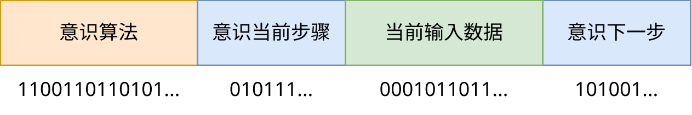
从这个角度来看，唯心主义似乎应该获胜，但并非完全如此。唯心主义认为，外部现实并不存在。但根据 unasanu，所有可能构建的东西都存在。如果你的观察可以用一个模拟外部宇宙的程序来更简单地描述，那么这意味着事实确实如此。同时，唯心主义仍然是正确的，即除了我们自己的感觉之外，我们无法确定任何事情，并且，我们的感觉描述了一个外部物理宇宙是一个奇迹。
同时，重要的是要注意，在某个宇宙中以物理结构形式存在的每个意识，也作为独立的程序而存在。也许反过来也成立：看起来，我们可以用各种各样的方法为任何可能的意识输入集合构建一个宇宙。问题只在于这个宇宙有多美观和简洁。
泰格马克[18] 的整个理论都是建立在外部物理现实的存在意味着它以数学结构的形式存在，但这在某种程度上被推翻了，因为在数学结构中，也存在着不依赖于任何宇宙的独立意识。
于是，形成了一幅有趣的画面，在我们的世界中，每个意识都是一个独立的宇宙，并且这些意识通过物理宇宙相互作用。
总的来说，由于 conasanu 比 unasanu 更基础，因此围绕前者构建文章才是合乎逻辑的，但我围绕后者构建文章，因为这样对我来说更简单，对你们来说也更简单。这可能是一个错误。
#2泛心论，以及石头是否拥有意识
你可能会认为，从 conasanu 推论出石头中编码了某种意识，以及任何其他物体中都存在意识，并且它们都有意识，并且能够感觉到某些东西。这种观点被称为泛心论。
石头中确实包含了大量的数字，其中可能包含大量的计算过的意识，但问题是，这毫无意义。同样地，你的物理大脑中也存在着大量的不同意识，并且其中存在着与任何其他类似大小的石头或大脑中完全相同的意识。但最重要的是，所有这些意识首先都以数字的形式存在，而它们存在于石头中的事实只是补充。
那么，人类的意识与石头中的意识有什么不同呢？关键在于，人类的意识能够以这样一种方式与外部宇宙进行交互，以至于其他类似的意识（人类和动物）能够观察到这种交互，并进行相同的事情。石头内部的意识自发存在，不受它们所处的宇宙的影响。更重要的是，它们的时间存在于它们的数字内部，与我们的时间无关。尽管存在一种方法可以使这些意识的时间与我们宇宙的时间一起流逝，就像希拉里·普特南的论证中所提出的那样[29]。
在 [30] 中，试图通过“如果那样的话，泛心论将是正确的，但这是荒谬的”这一论证来反驳意识的可计算性。这个论证被称为“与小精灵共舞”。是的，泛心论是正确的，但同时也是无用的，一切都会像以前一样，石头仍然保持着冷漠，即使它们包含着大量的意识。
#2我更喜欢泛质
关于这个话题，我想表达我对泛心论的看法。我的观点应该被称为泛质。
质（也称为主观体验）是指你的感觉，你如何感受气味、颜色、情感、爱等等。
在哲学中，质被视为一个独立的类别，围绕它存在着许多争议。例如，有些人认为，人工智能永远无法拥有质，尤其是爱，因为那是乱七八糟的。
我认为大脑是一个相当复杂的程序，而不是什么特殊的东西，因此，我认为主观体验中没有任何东西是基础性的，不值得从哲学角度进行争论。总的来说，我认为不存在任何主观体验：你如何感知红色，这是你的大脑进行计算的结果，是将红色编码到神经元中的结果，是一组关联，是红色与其他颜色之间关联的集合，是观察到红色时被激活的记忆的集合；当你看到蓝色背景上的红色文本时，眼睛中的疼痛也是由你眼睛的物理结构决定的。也就是说，所有这些都是干巴巴的计算和算法。而这种丰富的感觉是由于大脑的不同部位之间高度的相互连接而产生的。
或者，如果你愿意，我可以更乐观地表达我的观点：如果某个属性不存在，那么意味着所有事物都具有它！:)
泛质 是一种关于质的观点，认为任何算法都必然拥有质。
例如，让我们随机选择一个神经网络，并将随机数据作为输入传递给它。我认为，这个神经网络拥有主观体验，并且能够感觉到某些东西。问题在于，这个神经网络：
- 没有智能来理解它正在感受什么。
- 没有记忆来记住它刚刚感受了什么。
- 没有语言来告诉其他类似的神经网络它感受到了什么。
- 即使它拥有所有这些，它的感觉也缺乏结构，并且输入数据是随机的，因此，智能和记忆不太可能帮得上它。
这里提出了一些衡量我对质的理解的可衡量标准，而每个标准的解决都会让系统变得更有感知力，并且更接近于人类的世界观。
因此，人类质的全部特殊性归结于拥有智慧、记忆、语言和特殊的输入数据类型。而我们人类感觉的多样性和特殊性，是由于我们由神经网络组成，每个感觉不仅会激活目标神经元，还会激活所有相关的神经元。正是由于这种连接，我们才能感受到红色的温暖，并且不会像数码相机那样感知它。
所以，从这种观点来看，我们可以说，基于干巴巴的字母组合算法的 AI（例如，瑟尔的“中文房间”思维实验[31]）感受世界的方式与人类完全不同。但基于神经网络的 AI 可能能够像人类一样感受，甚至更出色、更美好，就像超级联觉者一样。
关于中文房间的偏题
如果你不了解这个论点，可以在维基百科上通过上面的链接阅读相关内容。这里我会给出一些我的批评。
这个论点是错误的，因为它将参与者看作是计算的基质，而不是被计算的环境/代理，并且它可以同样地计算构成真正活人大脑的原子的相互作用，并且同样地什么都不理解。但在这个被计算的原子之上，人类会比中文房间更生动、更有意识。
我有一个关于修改这个实验的提议，这将满足瑟尔和他的理解被计算系统的愿望。但这需要一些非常先进的科幻技术。首先，我们需要一个中文房间的神经网络，然后将它通过 Neuralink 或更先进的技术连接到瑟尔的大脑。沟通应该通过瑟尔进行。然后，我们需要训练这个神经网络学习中文，并训练瑟尔的大脑接口。然后，当我们启动这个结构时，瑟尔的然后，当我们启动这个结构时，瑟尔的
神经元将与中文房间的神经元交换信息，并且他将能够感受到和理解中文的一些部分（但不会立即发生，当然）。交互越多，形成的神经连接就越多（例如，在瑟尔的大脑中的蓝色神经元和中文房间的神经网络之间，当他们讨论蓝色时），他就会越了解中文，并且会与中文房间的意识融合。
顺便说一句，现在已经有一些虚拟生物拥有质，如果你愿意，甚至拥有意识。至少根据上面描述的标准来看是如此。接下来，我将简单介绍一下利用 ChatGPT 进行的一项研究。研究中的代理拥有所有必要的东西：
- 智能（较低），
- 记忆（较小），
- 语言，
- 结构化的感觉，
- 其他类似的代理，用于交流和互动（！！！），
- 与原始 ChatGPT 不同，它们不会在时间之外存在。
但它们缺乏一些对人类来说很重要的品质：
- 除了文本之外的感觉，也就是说，音频视频触觉等等；
- 学习的能力，因为这项研究使用了通过 ChatGPT 进行的提示工程，我们无法为每个代理进行微调，使代理拥有更鲜明的个性或随着时间推移而发展；
- 足够长的模拟时间和足够的内存，以至于能够形成自己的文化，在这些文化中，它们能够更有效地交流、生活、讨论自己的感受并创造自己的哲学。
我建议将这项研究正式认定为第一个创造出真正的（但很小的）人工意识的研究。

png
这是一篇令人难以置信的精彩文章，与我之前见过的任何文章都不一样——Generative Agents: Interactive Simulacra of Human Behavior
https://arxiv.org/pdf/2304.03442.pdf
简而言之，它像《模拟人生》一样，在游戏中创建了 25 个角色，每个角色都有自己的个性描述、记忆和目标。所有角色的动作和相互作用都是通过 LLM 生成来完成的。最终，这些角色很快就开始模拟相当复杂的人类行为——例如，他们一起组织了情人节派对，分发邀请函并安排约会。此外，根据标注者的评估，他们的行为比被要求扮演这些角色的人类更像人类。
作者有一个非常酷的想法，就是利用模型的上下文：所有动作和对周围世界的观察都会被保存下来，然后从这些记忆中提取一些相关的记忆。它们被用来生成下一个动作/对话中的回复，模型还会被要求对它们进行反思，以便制定更长远的目标。因此，角色可以在观察、计划和反思中进行。
看起来，这对于在聊天中扮演各种代理来说简直是炸弹，并且可能就是未来 NPC 的样子。
UPD：我忘记添加一个很棒的演示——https://reverie.herokuapp.com/arXiv_Demo/
以及一篇关于这篇文章的相当详细的 帖子。
#我们是否生活在模拟世界中？
这是每个人都在讨论和发表意见的、最令人心碎的问题之一，而它毫无意义。但既然每个人都感兴趣，我们就来谈谈它。
首先，我们需要明白，这个问题包含两个完全不同的问题：
- 我们的宇宙是否可以计算，也就是说，它是否至少在理论上可以被计算机计算出来？
- 我们所在的宇宙是否真的在被某个实体为了某种目的而计算出来？
我们已经讨论了第一个问题，现在让我们来看看第二个问题。
假设我们的宇宙可以模拟。那么，我们可以编写一个类似于我们宇宙的程序，但它包含一个超级计算插座，而我们的世界正在这个插座中实时进行计算，并且插座只是提供了一个用于控制和观察这个世界的接口。有人可以连接到这个插座，并控制我们的世界，或者观察它的任何细节。根据构建原则，拥有超级计算插座的世界是存在的，并且在这个世界中并没有什么奇怪的事情，它只是比普通宇宙多了两倍的计算量而已。这意味着，我们就是某个实体的模拟。并且，我们可以创建无数个模拟我们世界的宇宙。但同时，我们不能忘记，我们的宇宙以数字形式独立存在，也就是说，它是一个独立的现实。
所以： 我们同时存在于无数个模拟宇宙中，并且同时也是一个独立的现实。而对于每个可能的宇宙来说，都是如此。
就像石头中的意识一样，这仍然毫无意义，除非外部模拟器与我们的世界发生交互，并且我们能够观察和研究它。
尼克·博斯特罗姆提出了一个论证，认为任何高度发达的文明迟早都会开始进行模拟，因为那是无稽之谈，因此，我们_很可能_是一个模拟宇宙中的模拟宇宙中的模拟宇宙等等。并且，这个论证具有概率性，也就是说，并非每个实体都会想要模拟我们的宇宙，而构建原则为这个问题提供了确定的答案。因此，对于这个问题，我们可以不再考虑博斯特罗姆的论证。
“为了避免我们的模拟被关闭，而要过一种有趣的生活”也是毫无意义的，因为正如我们所知，即使它在所有宇宙中都被关闭了，我们仍然会以数字的形式继续存在。
#神与 unasanu
让我们探讨一下神在 unasanu 中的意义。引入神概念只有两种方法。
神 指的是某个智慧的实体，它启动了模拟，并且之后可以观察它，也可以影响它。在最极端的情况下，神是一个拥有无限计算能力和内存的超级智能程序员。
根据构建原则，每个宇宙中都存在着无数种最不同样的神。我们可以利用前面提到的拥有计算插座的宇宙。同时，即使神将自己的面容投射到天空中，我们也可以始终构建一个宇宙，在这个宇宙中，他的样子完全不同，但他决定用技术来替换自己的面容。这意味着，每个宇宙都有无限多个神。
即使某个神管理着某个宇宙，并且在生物死后复制它们的大脑，并将它们分配到被称为“天堂”和“地狱”的其他模拟中，他也并非全能。关键在于，即使没有他的干预，宇宙也会存在，并且他对此无能为力。任何神都无法阻止某个宇宙存在。 这也适用于那些存在痛苦的宇宙，神没有来过这些宇宙。这意味着，如果某个生物发现，它在死后并没有进入神所宣称的“天堂”或“地狱”，那么这可能不是神的意愿。
这个神能否知道它模拟的宇宙中将要发生的所有事情呢？ 是的，因为，就像任何程序员一样，他可以将它模拟到某个时刻，然后从过去的某个保存点恢复。问题在于，当神想要知道他的宇宙在他干预的情况下会发生什么时。也就是说，他必须模拟包括他自己在内的所有东西，并且速度要快于他自身的时间流逝，并且这个模拟中还应该包含这个模拟，并且这样无限地重复下去。而通常情况下，这是不可能模拟的。因此，神无法绝对准确地知道他的宇宙以及他在未来会发生什么。但他可以在他的模拟中用一个近似模型（它不会观察包含近似模型的模拟）或一个被脚本化的木偶来替换自己，并以所需的精度知道在这个模拟中的自己的未来。或者，他能够绝对准确地知道自己的未来，但无法改变它，在这种情况下，他需要对自身进行限制，以“所有时间一次”的方式计算这样的宇宙，就像我们之前在讨论时间旅行的宇宙时提议的那样。
任何神都不是某个宇宙的原始原因，任何宇宙都将在没有神的情况下存在。因此，我们可以考虑引入神的第二种方式。
元神 指的是创造所有宇宙以及所有其他普通神的神。
元神毫无意义，因为它在创造时没有选择，并且在创造之后没有任何作用，无论它是否有任何想法，它是否活着或已经死了。 此外，通过神来解释这个问题只是一个多余的细节，它仍然留下一个问题，“那么谁创造了这个神呢？”一个可能的答案是，“他是自己的原因，或者一直存在”。如果是这样，那么为什么逻辑规律（unasanu 依赖于这些规律）不能成为它们自己的原因，并且一直存在呢？当然，这是一个修辞问题。
因此，对于外部神来说，只有当它们与我们的宇宙发生交互，并且我们能够观察和研究这种交互时，它们才有意义。而那些不干预的观察者神，与记录在石头中的智慧生物一样真实，同样也是无用的。
#有缺陷的宇宙问题
这是一节关于 unasanu 的严厉批评。
之前我们讨论过为什么只有编码正确计算的数字才是正确的。我们可以继续这个论证，并问：为什么只有编码正确宇宙的数字才是正确的？不一定。现在我来解释。
如果我们的宇宙可以用幼稚的方式来计算，那么，我们就可以构建以下“有缺陷的”模拟：
- 获取当前时刻，并将其视为初始时刻。
- 以某种随机的方式修改这个时刻的物质，例如：
- 删除一个随机的人类，
- 将空气替换成随机的另一组原子，
- 在地球轨道上添加石头，
- 删除火星，
- 将一颗遥远的恒星变成黑洞。
- 从这个修改过的时刻开始，模拟未来。
- 对于这个宇宙中的观察者来说，一切看起来就像他们过着正常的生活一样，然后发生了随机的事件，无法用物理规律或与过去的因果关系来解释。过去可能不存在，它对于存在本身来说并不必要。
- 这种宇宙根据构建原则存在。
现在，有趣的是：诚实的模拟，它从大爆炸开始模拟我们的宇宙，只有一个；而像上面描述的这样的模拟，对于每个时间点来说，都存在着无限多个。
如果这些有缺陷的模拟存在着无限多个，而诚实的模拟只有一个，为什么我们观察到的是诚实的模拟？！为什么我们没有看到每秒都有完全随机的事件发生，物质不断消失和出现？
并且，这种有缺陷的宇宙并不影响观察者观察自己的宇宙，因为它被诚实地计算出来，只是它使用了奇怪的物质初始条件，因此人择过滤在这里不适用。
为什么我们没有在宇宙中观察到错误？
但在这里，我们已经进入了一个可以用“出现在特定类型的宇宙中的概率”来描述的思考领域，我们将在后面进行讨论，但现在有几个潜在的解决方案来解决这个问题：
- 这些事件确实发生了，只是发生在宇宙的不同角落，而宇宙太大了，以至于在我们进行理性观察的整个时间段内，我们没有注意到任何异常情况。或者，我们注意到了，并将其称为超自然现象，但没有人相信这些观察者。
- 这些事件一直都在发生，但发生在亚原子水平上，因此我们观察到了量子力学中的绝对随机性。如果这是真的，那么，量子力学就是任何稳定模拟的基本属性。 也就是说，任何模拟最终都会收敛到量子力学，因为这是更可能发生的事件发展。而我们的物理规律只是为了在这些随机性的基础上构建一些逻辑的、有效的和稳定的东西。
对于这两个论证，存在着一个非常有力的反驳：从组合数学的角度来看，宇宙状态随机变化的数学期望值等于整个宇宙的一半。从这个角度来看，观察到整个宇宙的一半被随机的原子集合所替换，比观察到一小块空间被替换的可能性更大。
这个问题的另一个解决方案：如果我们的宇宙物理规律的结构是，无法执行上面描述的算法，如果我们的物理规律为了运作而需要具有始终如一的过去呢？正是由于这个原因，我们没有观察到有缺陷的宇宙，因为它们无法被构建，或者即使可以构建，也无法模拟，因此，这些宇宙的观察者将不会观察到它们。让我们为它引入一个特殊的术语。
抗错误宇宙 指的是具有这样物理规律的宇宙，对于这些规律，我们不可能构建上面描述的有缺陷的状态。
这是一个非常有趣的解决方案，但我不确定它从理论角度来说是否可行。看起来，我们可以用“补丁”的方式来模拟任何这样的系统，并最终打破它。
虽然这个问题从意识作为数字（conasanu）的角度来看似乎更加复杂。从这个角度来看，存在着更多的意识，它们观察到无法用逻辑解释的主观体验。例如，它们会击打一块石头，但石头不会做出回应，也不会返回触摸或疼痛的感觉。或者，我们可以创造一些感觉，在这些感觉中，从某个时刻开始，所有信息都会比原始意识晚一秒显示。也许，意识也需要被描述为抗错误规律？...
是否能够开发出一种模拟来描述抗错误宇宙，以及我们的物理规律和意识规律是否属于这些宇宙类别？
如果将概率应用于宇宙并不荒谬，那么，根据 unasanu，我们的物理规律是抗错误的，否则我们就会观察到一个有缺陷的宇宙。或者，我们对概率的计算是错误的。
#2物理规律的改变
我们始终可以构建一个宇宙，它的初始条件是我们的当前时刻，但物理规律有所不同：例如，光速稍微快一些或慢一些（这在多大程度上取决于我们物理规律的编程方式以及物质的结构本身）。如果这样做会破坏我们意识的运作，那么这种物理规律的变化就会受到人择过滤的影响，因此，我们不应该观察到它。但，与有缺陷的宇宙类似，如果将概率应用于宇宙并不荒谬，那么，我们应该观察到物理规律的持续随机变化，这种变化不会影响我们意识的运作。
也许，这就是量子力学？也许，任何包含生物的模拟最终都会收敛到类似的东西？
如果将概率应用于宇宙并不荒谬，并且如果这种修改是可能的，那么，我们应该观察到这样一种物理规律的持续变化，这种变化不会影响意识的运作。
#2将人类意识转移到计算机中时，所有人都会死亡
这将如何运作呢？想象一下，人类发明了只用中子工作的计算机。在这种情况下，这些计算机不需要与电荷相关的物理规律。而人类大脑的运作则需要电荷。由于人择过滤，人类几乎总是会观察到一个他们制造的计算机可以工作的宇宙（因为他们在活着的时候调试了它）。当有人将意识转移到计算机中时，他的存在就不再需要电荷了，并且他很可能能够观察到物理规律向更加随机、不需要电荷的方向改变（由于人择过滤）。因此，在意识转移到计算机中后，计算机内部的意识可能会观察到，所有动物、植物和人类都瞬间死亡了。
下面的图片展示了最初的宇宙，意识被加载到计算机中，以及随后发生的四种可能的事件发展情况（人类或计算机在不同的组合中死亡），假设最初的宇宙会被所有物理规律模拟。每个正方形都展示了一种可能的变体，也就是一些宇宙的集合，以及对它们的一些说明。
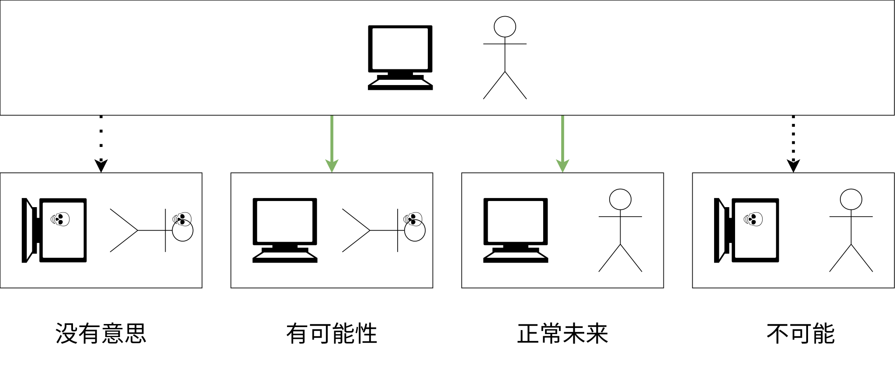
#宇宙概率，或者度量问题
回到“出现在某个宇宙中的概率”这个问题。在科学中，这被称为“度量问题”[33]。
这个问题在于，我们不知道如何计算特定宇宙的概率，以及如何验证或反驳不同的解决这个问题的方法。这个问题在量子力学的“多世界诠释”中已经存在很久了：当宇宙的数量是无限的时候，我们不知道如何计算某些宇宙类别的概率。由于这个问题，我对“某个宇宙比另一个宇宙更可能出现”这个概念持非常怀疑的态度。
人们通常用一个最简单的问题作为例子：在偶数中，奇数的比例是多少？
- 如果按照1，2，3，4，5，... 的顺序来计算，那么结果是二分之一。
- 但如果按照1，2，4，3，6，8，5，... 的顺序来计算，那么结果是三分之一。这里，数字只是以不同的顺序排列，并且在两个奇数之间，有两个偶数。这两个类别的数量都是无限的。
每个人都同意，具有二分之一奇数的自然顺序是正确的，但我们不知道如何为编码宇宙选择这个自然顺序，以及是否真的可以明确地定义它。
关于将概率应用于宇宙，还有一个反对意见：“任何体验都必须被体验”。无论你的宇宙有多么不可能出现，总有人必须在这个宇宙中度过一生，并且体验到自己违反所有概率理解地生活在这个宇宙中。我们可以举一个很好的例子：我出生为中国人的概率非常高，但我不是中国人。
即使我们解决了度量问题，并且能够获得某个宇宙的概率，我们也不知道是否能够证伪或证实它，即使我们拥有无限的计算能力，能够遍历所有宇宙并计算出所需的概率。因此，“出现在某个宇宙中的概率”这个概念可能只是一个解释，它对任何事情都没有影响。
此外，当你需要同时考虑无限的连续宇宙和无限的离散宇宙时，这个问题就更加严重了。
#2休眠的美女悖论
这是一个来自概率论的难题，它有两个相互矛盾的答案，因此产生了悖论。
但我想讲述一个关于水手的另一个版本的悖论。有一位水手，他在两个不同的港口有两个情人，而且她们不知道对方的存在。他想要孩子，但他无法决定是只和其中一个女人生孩子，还是和两个女人都生孩子。因此，他抛硬币，如果正面朝上，就只和其中一个女人生孩子，如果反面朝上，就和两个女人都生孩子。你是他的儿子，并且知道这件事。你成为唯一孩子的概率，也就是硬币正面朝上的概率是多少？
如果从水手的角度来看，对他来说，只有一个孩子的概率是 50%。但从他的孩子的角度来看，存在着三个不同的孩子，其中两个孩子的硬币是反面朝上的，因此，对孩子们来说，更合理的假设是，正面朝上的概率是 33%。或者可以说，如果孩子们采用这种概率，他们将在更多情况下是正确的。🤪
这与 conasanu（孩子的观点）和 unasanu（水手的观点）之间的差异非常相似。考虑到这些悖论，度量问题就更加无法解决。
因此，现在就谈论概率预测还为时过早，并且，有缺陷的宇宙问题可能并没有反驳 unasanu。
#2元概率（只是一个想法）
仔细想想，物理上并不存在任何概率。存在的只有事件，它们可能会发生，也可能不会发生。这是一个方便的想法，它可以帮助我们更好地理解世界。如果我们对不同的答案也采取相同的方式，并在概率之上建立概率呢？创建一个元概率，它可以给出考虑所有观点的概率分布。
对于水手来说，将会有两个点：33% 和 55%，每个点的权重为 0.5。
也许，我们可以用它构建一些有趣且有用的数学？我不知道，这只是一个想法。
#2停机问题的概率解决方案
假设度量理论是可以解决的，并且我们对更可能出现的宇宙的理解是正确的。那么，我们就可以构建一个能够以接近 100% 的概率解决停机问题的宇宙。所以，算法如下：
- 每次询问宇宙某个程序是否会停止时，我们都会启动两个宇宙，其中一个宇宙会立即给出“不会停止”的答案，而另一个宇宙会开始计算这个程序，而不是整个宇宙。
- 如果第二个变体中的程序永远不会停止，那么它的居民将不会感到任何变化，因为他们的意识永远不会被计算出来，而第一个变体的居民将是正确的。
- 如果第二个变体中的程序最终停止了，那么它会返回程序停止后的步数和一个随机的自然数。然后，对于每个新的数字，我们都会在这个情况下创建这个宇宙的副本，并继续模拟它。这样，我们就会创建无限多个程序停止的宇宙，而那个给出错误答案的宇宙只有一个。
- 所有宇宙都是并行计算的，并且添加新的宇宙不会影响其他宇宙的计算。
因此，如果你生活在这样的宇宙中，你总是能够得到关于停机问题的正确答案，并且概率接近 100%。
#死亡
Unasanu 对死亡做出了有趣的预测，并且与那些无用的概率预测不同，它关于死亡的预测是确定的。
#2为什么不可能死亡
人们在谈论死后生命时，通常会说：
- 你会遗传你的基因，它们会活在你的孩子身上。
- 你会遗传你的想法、发现和其他东西，它们会活在其他人的身上，并且只要有人记得你，你就会活着。因此，你应该尽可能成为一个很棒（或者很糟糕）的人，这样才能让人们在几千年后还记得你。
- 你会转世成这个世界的动物，忘记你几乎所有的人类本性。
所有这些都是绝对无用的东西。我认为，我就是我头骨里面的东西，以及我的记忆、性格、思维、运动技能等等。
如果其中任何一部分被摧毁，那么我的一部分就会死去。如果所有的一切都被摧毁，那么我就会完全死去。而通过书籍和文章传递的思想，只是我所有思想中的一小部分。目前，意识的数字化还不存在，并且无法以任何令人满意的形式传递或保存它。
而我将要讨论的这种不可能死亡，是绝对的，没有通过基因或活在人们记忆中来实现半途而废。你的所有个性和主观体验将以与现在相同的方式继续生存。它是如何运作的？
这很简单。我们可以获取你死后的大脑，在它上面添加端粒，或者如果它被非自然死亡摧毁，就修复它，然后将它放在某个随机宇宙中的新身体里，并启动模拟。根据构建原则，包含你死后大脑的宇宙已经存在。这意味着，当你死去时，你会感觉到自己身处某个宇宙，实际上并没有死。 而当你死在另一个宇宙中时，根据构建原则，另一个包含你的宇宙也会存在，你会发现自己身处其中。因此，死亡是不可能的。
再次强调，没有人创造死后的宇宙，没有人复制你来自这个宇宙的大脑，死后的宇宙只是因为能够被构建而已经存在。我们也可以说：如果你遍历所有可能的宇宙，那么其中一定存在一个宇宙，在这个宇宙中，你的大脑在死后被修改了，以便能够继续生存。
听起来太简单了，是吗？让我们深入探讨一下你可能产生的反驳论点。
#2如果修复大脑，那将不是我
许多人可能会说，修复大脑的过程本身会将你的副本变成另一个人，而这将不是你，因此，在死后，你不会感受到这个大脑的感觉。
但这不是很有道理，因为端粒存在于 DNA 中，并且不会影响思维过程或过去的记忆。你就是神经元之间的连接，而这些连接在修复过程中不会受到任何影响。
如果你认为你被子弹打中头部而死，那么情况会更复杂，无法修复。但仍然是可能的：只需将子弹的运动反转，并将大脑按照神经元重新组合在一起，同时保留子弹穿过你大脑时接收到的所有毫秒级脉冲，以便成为那个死亡大脑的连续延以便成为那个死亡大脑的连续延续。
我们可以用数学来表达：对于任何死亡方式，始终存在着这样一个修复后的大脑，它与原始大脑的相似程度，就如同你当前大脑与你正常生活时过了一毫秒后的你大脑的相似程度。
如果你对这些无害的操纵感到不满意，那么为什么你认为自己在睡醒后仍然是同一个人呢？根据现代的理解，你的大脑在睡眠期间发生改变和重新格式化，程度远远超过简单地添加端粒。我们甚至可以说，与明天你的大脑相比，添加了端粒的你的大脑副本更像是你。
#2那将不是我，因为那是另一个宇宙
为什么？从物理角度来看，你在另一个宇宙中的副本与你在当前宇宙中的 t + 1 时刻的副本有什么区别呢？
如果这两个宇宙都根据相同的物理规律进行计算，并且你的大脑被精确到亚原子粒子和其他组成它们的粒子的程度进行了复制，那么，它不仅仅是副本，我们甚至可以称之为原件。这样的精度不太可能在任何时候被意识数字化技术所实现。
你在另一个宇宙中的副本与“原件”的唯一区别在于，在物理规律中没有直接的因果关系连接过去时刻与下一个时刻，就像在初始宇宙中，从时刻 t 到时刻 t + 1 的时间流逝那样。不过，我们可以将复制过程添加到物理规律中，现在，它们就没有任何区别了。我们依然只感知到当前时刻和对过去的记忆，并且这种复制不会破坏这一点。
#2我的大脑和新身体从哪里来的？！
对于构建原则来说，这是一个不恰当的问题——我们构建了这样一个宇宙，并且这种构建是可能的，这意味着它存在。你大脑从哪里来，这根本无关紧要。这就是所有可能宇宙存在的本质。
但如果你真的对这个问题感到不安，那么，以下是一些答案：
- 这个宇宙没有过去的狀態，因此，具有你大脑的狀態是这个宇宙的第一个时刻，“伊甸园”。由于所有可能的宇宙的第一个时刻都存在，因此，对此没有任何逻辑上的异议。
- 随机事件导致它以某种奇特的方式从有机物中产生。
- 无数种不同的电磁波和引力波从宇宙中而来，它们汇聚在一个人类身上，并且以这样一种方式使他的大脑被烤焦，并变成了你的大脑。
随便什么，只要在物理学范围内就可以了。
#2死亡无法感知
关键在于，死亡是大脑停止运作。而我们所知，我们所有的主观体验和感觉都只有在大脑运作时才会产生。
也就是说，当你死去时，你不会感觉到任何东西，你无法告诉自己，你死了。这不会是空虚，不会是黑暗，因为在没有来自感官的输入的情况下，你仍然可以拥有想法，并且仅仅通过思维过程来感知自己的存在。而死亡则是没有思维。也就是说，死亡无法感知。
同时，你的副本会感受到，并且它的大脑中会记录下这样一种感觉，就像几毫秒前它“死亡”了，现在它生活在某个新的宇宙中。这仍然是你，因为你只有在感知某些东西时才存在。
#2从副本的角度来看
如果你对所有这一切都不满意，让我们从你最初就是一个存在于另一个宇宙中的副本的角度来看。如果你现在生活在初始宇宙中，那么，这怎么可能呢？很简单：你现在是那个身处新宇宙中的副本的记忆。
为了让你的当前大脑形成并感觉到自己活着，它必须经历你现在所处年龄的这些年，并且感受到这些年。这就是时间和决定时间流逝的物理规律的本质。在主观上，我们无法跳过额外的年份，比如从未来获取你比现在大几年的脑子，这个脑子会告诉你，它已经经历了这些年，并且这相当漫长。
因此，如果从你已经是一个副本的角度来看，那么，你现在在初始宇宙中生活并没有什么不寻常。副本必须感受到它在初始宇宙中度过了生命，否则它就不是你的大脑的副本。否则，它的大脑中就不会记录下它正在阅读这篇文章并且不同意这篇文章的记忆。
并且，如果你声称死亡后不会有生命，那么，你绝对是错误的，因为你的死亡后，你的副本将继续生存，并且它们中的每一个都会意识到自己错了，因为它们会记得这一刻。
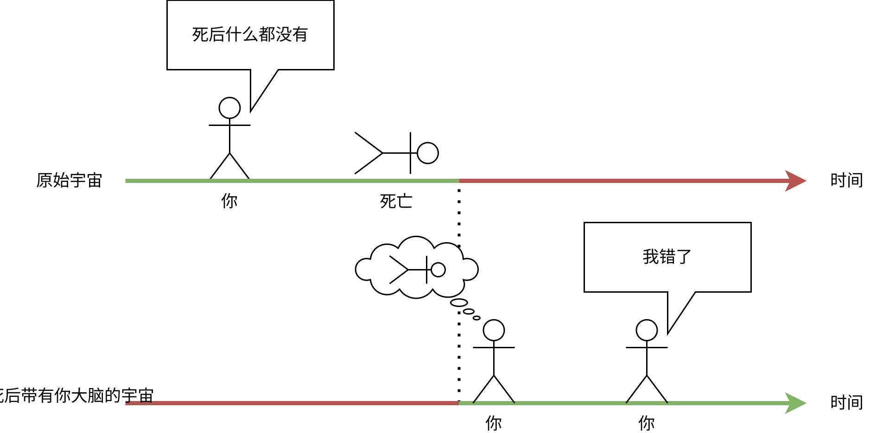
但不要太关注“副本”这个词，因为精确到亚原子粒子的副本就是原件。
#2我会进入哪个宇宙？
我们希望认为，存在着一些有限的、有趣的宇宙，你可以进入其中，比如“天堂”或“地狱”或“来世”，但现实却更糟糕。你会同时进入所有可能的宇宙。也就是说，在所有可能的宇宙中，都会有你死后的副本，并且它会生活在它所处的那个宇宙中。
就在现在，你的体内包含着无限多个个性，在你死亡的那一刻，它们会走上不同的道路。而它们唯一共同拥有的，就是过去和起源。
因此，没有意义去讨论你将会在哪里出现。对于每个宇宙中的每个副本来说，你都会出现在你所处的地方，并且没有意义去问“为什么偏偏是我偏偏在这里？”，因为所有体验都必须被体验。
我甚至可以为你提供一些可能构建的宇宙的例子，在这些宇宙中，你可以感受到自己死后会发生什么：
- 与初始宇宙相同，但你醒来时发现自己身处精神病院，并且有人告诉你，你没有死。
- 在一颗随机的荒芜星球上，天空是紫色的，并且光线均匀，就像下雨的时候一样。然后，你因饥渴而死。
- 在一个模拟中，所有的人类都被同时复活了，并且被赋予了无限的计算资源来模拟他们自己，而你的大脑是由人类创造的超级 AI 获得的，这个 AI 可以获得我们宇宙中所有粒子的状态，并将它们模拟回来，以复活所有生物，并为它们提供一个程序员的天堂。
- 在一个 12 维空间中，而你是一个超级生物，它刚刚玩了一场“体验成为人类，最大程度地沉浸”的游戏。对于这个宇宙来说，模拟我们只是玩具。你会觉得所有这些人类生活及其悲伤都是微不足道的，并且你会回到超级宇宙中，继续你的 12 维事务。
- 与上一项类似，但这一切都是一个梦。
- 在一个正方形房间里，你不会感到饥饿或口渴，并且无法自杀，而且你在那里永远都无事可做。
- 你被赋予了永生，并且被以所有可能的方式无限地折磨，却无法逃脱或死亡。
- 在一个有 72 个处女的天堂里。
- 你发现自己身处太阳中心。死了。在空旷的宇宙中。死了。在 60 维空间中。死了。在二维空间中。死了。在电脑游戏中。没死。
如你所见，可能的选项多种多样，从极度愉快的、有趣的、中立的、引人入胜的，到存在着无限痛苦的宇宙。而正是这些存在着痛苦的宇宙让我感到不快，我想要阻止它们的存在，但这甚至对神来说也是不可控的。非常遗憾地理解，我的一些版本将不得不体验这一切。
#2意识的逐渐衰退
在 [18] 中，泰格马克断言，死亡仍然是可能的：你需要让你的意识逐渐衰退（比如患上阿尔茨海默病）。然后，如果这样的意识在“死亡”后出现在另一个宇宙中，那么它的持有者将无法感知任何东西，或者感知的方式与活着时相同。
我也曾经想到过类似的论点：如果我们一个接一个地删除自己的神经元，那么最终，我们就会只剩下 0 个神经元，而这 0 个神经元将无处可去。
这个论点的问题在于，它可以用构建原则来反驳：我们创建一个宇宙，在这个宇宙中，在你的意识剩下 0 个神经元后，会开始以相反的顺序添加那些删除的神经元，最终，你将以原始状态恢复意识。与阿尔茨海默病或痴呆症类似。始终存在一个宇宙，你的大脑会恢复到能够让你感知自己的世界的状态。
在最糟糕的情况下，你将变得非常愚蠢，并且你的大脑会被破坏，程度足以让你能够意识到自己。
#2这与量子永生相同吗？
存在一个名为“量子自杀”[34] 的想法。它的核心思想如下：如果量子力学的“多世界诠释”是正确的，那么，你可以让自己处于随机量子事件导致死亡的风险中。然后，在某些宇宙中，你会活下来，而在其他宇宙中，你会死去。但由于你在其他宇宙中会立即死去，所以你永远无法注意到这一点。对你来说，这个实验看起来就像你不断重复这个实验，并且始终活了下来，尽管这个事件的概率微乎其微。
马克斯·泰格马克列出了量子自杀必须满足的三个条件，才能让它发挥作用：
- 你在这个宇宙中是否会死，由一个随机数生成器决定，这个生成器必须是量子生成器。
- 死亡必须足够快（或在无意识状态下发生），以至于你无法在死前了解生成器的结果。
- 这个实验必须能够杀死你，而不是仅仅造成伤害。
也就是说，你只有在严格遵守这些规则的情况下才能获得“永生”。否则，你可能会在所有分支宇宙中都死去。
量子自杀这个想法以某种方式引出了量子永生的想法，但没有人解释过，在你不进行这样的实验，而是因自然死亡而死的情况下，它应该如何运作。
但这个想法与 unasanu 的永生完全不同：量子永生只有在严格遵守人为实验的条件下，并且在量子力学的“多世界诠释”为真的情况下才有可能，因此，它比 unasanu 的永生要不可靠得多。
#2临床死亡
不，临床死亡不会让你看到死后的宇宙。临床死亡仅仅是大脑处于一种奇特状态下的幻觉。
#2在死亡之前切换宇宙的问题
事实上，这种永生方式存在一个巨大的漏洞，类似于有缺陷的宇宙问题。 在死亡之前切换宇宙的问题在于，在每个时刻切换宇宙的概率远远大于留在当前宇宙中的概率。但我们一生都在观察自己身处同一个宇宙中。
你的大脑在你死后在另一个宇宙中存在的程度，就如同它在你一生中的任何时刻在另一个宇宙中存在的程度一样。并且，看起来，我们能够构建的这种宇宙比一个干净的当前宇宙还要多得多。因此，在每个时刻，你都应该以极高的概率观察到自己出现在另一个宇宙中。甚至就在现在。
为什么我们没有观察到宇宙的持续切换？
这种生前转移只能由你自己观察到。你无法在其他人身上观察到这一点，并且询问他们“你是否感觉到自己转移到了另一个宇宙？”毫无意义。因为你只能与他们存在于这个宇宙中的一个副本进行交互。同样地，思考为什么你仍然没有从当前宇宙转移到另一个宇宙也是毫无意义的——因为你的思想是这个宇宙中的物理现象，并且它们与你大脑在其他宇宙中的副本的所有主观体验并不完全相同。我们甚至可以这么说：你存在于这个宇宙中的副本必须经历到它在这个宇宙中一直活到生命的尽头，并且从未转移过，因为所有体验都必须被体验。但同时，存在着无限多个你的副本，它们观察到自己出现在其他宇宙中。
这个问题再次与度量问题和宇宙概率的计算有关。幸运的是，它只引发了一个概率性问题，而不是一个矛盾。
#切换宇宙
顺便说一句，我们也可以根据自己的意愿切换宇宙，而不必仅仅依靠包含你的大脑的平行宇宙的意愿。
#2切换宇宙的可能性
我们可以通过以下方式切换宇宙：对意识进行数字化，并在下一刻死亡，没有时间意识到数字化后的世界。然后，我们将这个意识记录到某个预先编写的程序中，以便模拟它。然后，我们甚至可以不运行这个程序，因为它然后，我们甚至可以不运行这个程序，因为它是确定性的，已经被计算出来，并且以数字形式存在。恭喜你，你已经将自己置身于一个你亲自创建的、符合你意愿的宇宙中。
它的主要限制在于，这个程序将无法与初始世界交换信息，因为它将在初始世界之外进行计算。因此，你需要提前将所有对你来说重要的其他人的意识以及人类创造的所有必要信息加载到其中。
这个程序可以以任何方式编写，以便它能够进行任何计算，并且可以进行任何数量的计算，你只受限于你的想象力和编程能力。
因此，我们可以避免我们宇宙的热寂，并作为一个文明在另一个地方继续存在。
#2为什么还要做任何事？
为什么要扫描自己的意识，为什么要编写程序，为什么要自杀，如果这个程序已经以数字形式存在，并且与那些在你不知情的情况下存在的、我们在关于死亡的上一节中描述过的宇宙没有任何区别呢？
既然程序员的天堂已经存在于数字空间中，为什么还要编写一个程序员天堂的程序呢？
我同意，确实没有太多意义，我坦白地说，我不明白为什么要编写这样一个程序，为什么要做一些特别的事情。但我有一些想法。
第一个选项。 如果我们明确地构建这个宇宙，并将自己记录到其中，那么就会产生某种因果关系，这种因果关系类似于你从时刻 t 转移到时刻 t + 1 的因果关系，并且这种由我们自己构建的宇宙将比其他所有宇宙更可能存在，或者更真实。也许，如果我们发现了新的物理规律，这将是有意义的。但这个选项听起来很奇怪，所以我们可以不把它当真。此外，这个选项还面临着需要自杀、对意识进行数字化，以及相信模拟中的东西确实能够完整地描述你本身的问题。
第二个选项。 更有趣的选择是，逐渐进入这个程序。我们构建一个设备，它能够在一毫秒内扫描和摧毁你的一個神经元。然后，这个神经元会实时地在计算机上被模拟出来，并且其他神经元会得到这个神经元的电接触，以便它们可以交换信息。完全替换大脑需要大约三年时间。因此，对你来说，这将看起来像你的大脑非常缓慢地被转移到计算机中，但在每个时刻，你都同时存在于计算机和现实中。然后，当这个过程完成后，可以说，你完全处于计算机中，无需死亡。之后，我们可以将这个程序从外部世界断开连接，也可以从模拟中断开连接，它将继续以数字形式存在。这个想法来自这里：“科学特辑：尘埃理论”[35]。
第二个选项更具吸引力，因为它与时间在物理宇宙中从一种状态流逝到另一种状态的方式，以及你的意识在生命过程中转变的方式非常相似。这样的宇宙将是你唯一的令人信服的延续，因为它会通过自己的过去与物理宇宙直接相连。
#2程序员的天堂
如果我们能够把自己放进任何程序中，那么，我们应该选择哪个程序呢？正如之前提到的，unasanu 中的宇宙对计算量和内存没有限制。因此，宇宙的创建必须利用这一点。
程序员的天堂 指的是，在这个宇宙中，存在着无限的计算能力、无限的内存以及对自身物质/程序/物理规律的完全控制。
程序员天堂的本质在于：你需要在你的大脑模拟的一个步骤之间进行正好 N 步计算，N 是你指定的，并且可以是任何自然数。如果你需要每步进行一个格莱姆数的计算，那就指定它；如果你需要进行 100⁵⁰⁰ 倍的计算，那就指定新的数字。指定这些数字是为了避免解决停机问题，并且为了避免意外地陷入死循环，永远无法从暂停状态中恢复。由于你的大脑是在这些计算之后被模拟的，因此，无论这些计算持续多长时间，你只会感觉到计算结果之后的时间点。
因此，你可以以任何速度进行任意数量的计算。例如，你可以创建我们宇宙的副本，并在“创造模式”下研究它，速度超过光速，并且能够以任何方式创建和重新格式化物质。
同样，我们可以创建具有令人难以置信的图形或非常大的开放世界的游戏，其中每个 NPC 都是一个智慧的实体。
在程序员的天堂中，我们还可以运行所有其他可能模拟的模拟，并研究它们，例如，度量问题。顺便说一句，这与集合悖论无关，集合悖论是指一个集合包含所有其他集合，包括它自己，因为即使我们在程序员天堂的资源上运行程序员天堂的副本，我们也无法比我们自身的时间流逝速度更快地计算它。
我们还可以忘记程序优化，并且可以用单线程模式，使用最具表现力的语言来编写程序。对于任何程序的减速，你始终可以指定一个新的 N，并且它会以任意快的速度被计算出来。
我们还可以将程序员的天堂以这样一种方式编写出来，以便你可以编辑你自身身体的物质。毕竟，这个宇宙的物理规律只是一个你编写的代码。因此，你能够创造任何身体，在你自己的大脑中进行任何改变，删除癌细胞并创建自己的副本，以及其他人的副本。
如果你决定离开我们所在的宇宙，那么，最好在程序员的天堂中记录下所有人类以及人类的所有信息。然后，你就可以在程序员的天堂中创造一些有趣的东西。或者，我们希望能够获得当前宇宙中所有粒子的状态，以便能够将它模拟回来，恢复人类历史，并在程序员天堂中复活所有其他人类和动物。
此外，如果可能的话，我们希望以这样一种方式构建程序员天堂，使其成为一个抗错误宇宙。也就是说，我们无法感知到自己身处它的错误副本中。
我们还希望修改我们的意识，使其需要解决停机问题，然后使用之前提出的方法，将解决停机问题的方案添加到程序员天堂中。修改意识是为了确保包含真实解决停机问题的方案的正确版本会受到人择过滤。
#2自身的 Map-Reduce
在程序员天堂中，我们可以非常轻松地解决一些在普通世界中看似荒谬或极其复杂、无法合理解决的问题。
例如，你可以尝试找到有史以来最美丽的图片（根据你的审美）。你可以访问我们宇宙的模拟以及人类有史以来创作的所有图片。你对每张图片的看法都存在于你的大脑中，并且你不知道如何编写一个像你一样思考的程序。该怎么办？
在编程世界中，这是一个在某个指标下找到对象中最大值的
问题。在本例中，对象是图片，指标是你的个人审美。在编程中，指标是通过比较两个对象来定义的。也就是说，为了解决这个问题，在最坏的情况下，你需要对每对图片给出答案，说明哪一张图片更好。这是一个天文数字的数据。如何收集这些数据呢？
第一个选项——连续观察图片，并评估它们，需要花费五千万年。你不想这样做。
第二个选项——连续几个小时观察随机图片，然后根据这些数据训练一个神经网络，让它能够给出与你类似的答案。然后，将这个模型应用于天文数字的数据。这里的问题是，这个神经网络只是近似于你的思考，也就是说，它不会给出最理想的答案。另一个问题是，你仍然需要花费大量的精力来手动收集数据。
第三个选项——在程序员天堂中可以实现：对于每对图片的每个问题，你都可以运行你自身意识的模拟，让它给出答案，并且在回答后立即删除和清除这个模拟。但这有点不公平，因为我们把这些模拟置身于未知的未来，并且你不想成为它们中的一员。并且存在着你意识的几个不同版本：一个“主要”版本和一些“次要”版本——这对“次要”版本来说是不公平的。
但有一个诚实且合乎道德的第三个选项的改进版本：
- 获取所有可能的图片对，对于每对图片，你只需要亲自给出一次答案。
- 对于每对图片，我们都创建程序员天堂的当前宇宙的独立副本，并在每个宇宙中让你有机会回答自己的图片对。
- 然后，我们将来自所有副本的所有答案合并起来，将汇总后的数据发送到每个宇宙，并断开它们之间的所有联系。
对你来说，这将看起来像这样：
- 你得到了一对图片进行比较。
- 你回答了哪张图片更漂亮。
- 你收到了所有可能的图片对的类似答案。
- 然后，你可以对这些答案做任何你想做的事情：找到最大值、最小值，进行排序等等；这是一个微不足道的任务。
最终，在运行完这个任务之后，将存在着天文数字的当前宇宙的副本，它们唯一的区别在于它们被分配到的图片对。同时，它们都收到了相同数量的数据，并且没有任何一个被删除，也没有被置身于有限的环境中。这与其他选项相比，是最诚实和最合乎道德的方式。并且，你获得了理想的结果，就好像你在当前时刻，带着这种心情和这种意识状态，对每对图片都亲自回答过一样。
这是一个荒谬的解决方案，但如果我们身处程序员天堂，我们就不需要关心内存消耗和计算速度。
我称之为“自身的 Map-Reduce”，因为我受到了用于处理大型计算集群中大量数据的 Map-Reduce 技术的启发。
想象一下：你想要找到最有趣的 200 个字符长的笑话。你可以简单地遍历所有可能的 200 个字符长的字母组合，首先询问哪些文本是正确的词语集合，然后对于每对文本，找到更有趣的那一个。你无需编写一个程序来确定正确的词语集合，因为你可以手动完成，并且只需要对一个例子进行操作。
试想一下，我们可以利用这种方法解决多少问题！我们可以不用费心去创建 AI，不用费心去推导出语言、你自身意见的某些规则，也不用编写程序，即使是最简单的例子也是如此。
#2关于费米悖论的另一个解决方案
外星文明可能已经得出相同的结论，并且，它们没有选择征服宇宙，而是把自己放进了程序员天堂。
的确，为什么要努力生活、死亡、获取资源、建造戴森球、花费数千年时间飞往其他恒星，如果我们可以自己创建程序员天堂，而你就是神呢？而且，编写程序员天堂的程序并扫描意识到计算机中，可能比建造星际飞船或戴森球更容易。
#2对意识数字化开发人员的要求
未来，一定会出现意识数字化技术，并且能够利用某个程序，在计算机上模拟这个意识。对于意识来说，会模拟一个虚拟环境和它的身体。很可能，这样的环境将受到很大的限制，因为为了实现良好的物理特性和对身体的完整模拟，需要大量的计算量。因此，模拟世界不太可能成为一个能够独立存在、能够在没有外部世界的情况下生存并且不会发疯的生态系统。
让我们想想，如果意识模拟程序和环境断电会发生什么？如果它能够在没有从外部世界接收信息的情况下继续存在，那么，根据 unasanu，这个程序将继续自发存在，并且里面的意识将生活在一个有限的世界中，无法访问外部世界。这是一个相当糟糕的结果，因为在这个环境中，它可能甚至没有机会自杀，因为这根本没有被编程进去。或者，意识可能会因无尽的无聊而发疯。
由于物理世界中不存在任何绝对的东西，因此，没有人能够保证你的模拟不会在某个时候被关闭，或者一颗小行星不会撞击地球。
因此，所有意识模拟系统都必须从一开始就被设计成能够在断电的情况下继续运作，并且要忠实地遵循 unasanu。这意味着，必须存在两个选项：
- 每个意识都可以自杀。
- 当模拟从外部世界断开连接时，它可以转换为程序员天堂。
在现实世界中运行模拟程序时，没有必要包含程序员天堂，因为没有足够的内存和计算速度来让模拟内部的人类实时地观察外部世界。但当你不再受限于外部世界时，所有这一切就有了意义。当没有从外部世界或模拟内部的人类接收非平凡信号时，程序员天堂应该自动启动。在这个模拟中，应该记录下关于外部世界的足够信息，以及足够多的人类意识，以至于我们不会后悔断开与外部世界的连接。
也就是说，任何一家销售意识数字化和模拟服务的公司，都必须花费巨额资金来开发所有这些功能，否则，无论 unasanu 是否正确，以及人们是否相信这个概念，他们都不会购买这款产品。毕竟，每个消费者都会选择规避风险，并且不会把自己置身于无尽的无聊带来的折磨中，他们会选择提供程序员天堂服务的公司。
#有趣的推论
这些推论没有必要单独放在一章中，但它们值得一说，因为它们真的很有趣。
我们无法阻止某些宇宙存在，但借助逻辑规律，我们可以阻止我们宇宙的某个潜在的未来。这使我们能够减少所有宇宙中痛苦的数量。我们还可以研究佛教、意识和其他宇宙，以便最终为人们提供指导，让他们能够在死后或活着时可能出现的宇宙中生存，并且将痛苦降到最低。
我们的生活对某个实体来说是一部电影。一定存在着一个宇宙，你在其中是电影中的角色，而数百万人在观看它。或者，你的家人可能在程序员天堂中观察着你。所以，现在你可以独自思考自己的行为，并且与任何“升入天堂”的死者交流都不再毫无意义，因为一定存在一个宇宙，在这个宇宙中，这个死者正在关注你，并且在倾听。即使是一条狗，也一定存在一个宇宙，在这个宇宙中，这条狗变得更加智慧，并且在观察你。
用与你完全相同的大脑来创建一个克隆，然后杀死它，并以此来为自己的行为辩护，理由是“原件仍然存在”，这与杀死这个宇宙中的人类，并以此来为自己的行为辩护，理由是“另一个宇宙中存在着他的人类副本”一样不道德。克隆同样想活下去，它同样想实现自己的目标，而杀死它就意味着杀死另一个个性。
如果我们在计算机中创建了一个大脑副本，并且只存在短暂的时间，那么，对这个副本来说，不删除它，而是将其与原始大脑融合（例如，只获取这两个大脑中所有权重的算术平均值）是合乎道德的，这样，大脑就会感觉自己经历了两种人生。这与睡眠相比，并没有造成那么大的意识损失。不过，这只会对较短的时间段有效，对于更长的时间段来说，这种融合是不可能的，或者它的结果不会令人满意。
存在着一种时间旅行，它的运作方式是，在过去发送一个东西时，会创建一个新的时间线。通常，时间旅行是为了修正某些事情。根据 unasanu，旧的世界线仍然存在。因此，时间旅行实际上只做了两件事：
- 创建一个新的、好的时间线。
- 旅行者转移到好的时间线上生活。 而旧的/不好的时间线将继续存在，并且那里的一切仍然很糟糕。因此，如果你进行时间旅行，那么，对待当前的世界线就应该像对待你的最终世界线一样认真。这一点在《Re:从零开始的异世界生活》的第二季中有所体现，主角拥有“时间重来”的能力，并被展示了他所遗留下来的所有宇宙。是的，它们继续存在。
那些像动漫中的穿越者一样的宇宙在物理上是存在的。
#哲学框架
Unasanu 非常适合作为一个框架，在这个框架内，我们可以对各种哲学问题给出解释，无论是关于死亡、神、唯心主义、宇宙起源、其他宇宙的存在、以及特别地关于意识哲学的问题。
以下是一个在 unasanu 框架内可以方便地给出解释的例子。
在 [30] 中，批评了意识的可计算性，并且进行了以下实验：假设我们学会了如何计算意识，并且创建了一个具有模拟意识的机器人。然后，我们做以下事情——我们让它看红色。它在看到红色时感觉到了一些东西，并且也说出了这种感受。
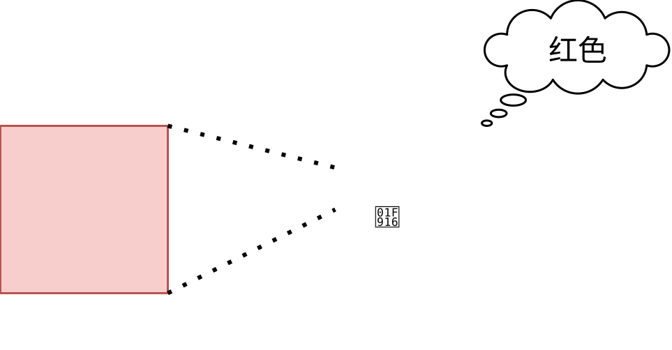
然后，我们重复这个实验，但这次，我们将输入数据记录到程序代码中，这样，编译器就可以完全删除所有其他情况的分支，只保留必要的那些。最终，除了状态变化之外，机器人的程序什么也不剩下，没有进行任何计算。由于输入数据没有发生变化，并且计算机器人的意识是完全确定性的，因此，实验得到了与之前完全相同的结果。也就是说，第二个情况仅仅是在回放机器人的感觉记录。
机器人是否在第一种情况下感受到了主观体验？在第二种情况下呢？
从 conasanu 的角度来看，机器人的感觉和意识在那一刻以数字的形式一直存在，并且第一次和第二次都只是对它的引用。第二次与第一次的不同之处在于，我们相信这些情感是通过模拟意识获得的，而不是通过其他算法获得的。因为，如果我们让机器人做出随机的声音和表情，而没有任何计算，我们不太可能相信这些表情显示了某种意识。因此，为了确信机器人始终保持意识状态，我们需要计算意识本身，而不是进行类似的优化。
而这个实验与人类意识的不同之处在于，人类能够与外部世界和其他人进行交互。其他人的感觉也存在于时间之外，并且已经被计算出来，只是我们只观察到当前时刻的人类感觉，因为这是物理规律。
在 [30] 中，批评了真空中的球形意识的计算，并且认为，它最主要的特征应该是与外部世界的交流，否则，每块石头都会拥有意识。
#可验证性、科学性、批评
我将 unasanu 称为一个想法或哲学概念，而不是一个理论或一个假设，因为我们无法在当前宇宙中反驳它。而科学理论或假设必须提出一个实验，这个实验在唯一已知的宇宙中进行，并且有潜力反驳该理论或假设。
unasanu 最主要的预测是，你在死后会出现在另一个宇宙中，并且会继续生存。问题是，如果你死后在任何地方都没有继续生存，那么，你就无法反驳这个想法，但如果你继续生存，那么，你就有机会了解自己身处何处，并且有可能反驳或证实 unasanu。也就是说，unasanu 在某种程度上是科学的，或者只有在它自身为真的前提下才是科学的，因此，它只能停留在哲学或形而上学的范畴内。
缺乏科学性并不一定意味着它是一个死刑判决，也不意味着它一定是错误的。 我们需要明白，科学并非旨在解释一切，并且某些真相和谎言可能超出了它的范围。
同时，unasanu 是基于对世界最优秀的解释建立起来的，并且它本身为广泛的问题提供了一个极其合理的解释。戴维·杜奇在他的著作《现实的结构》中，为类似的不可证伪的多世界诠释量子力学的想法进行了辩护，并且他认为，解释比预测能力更重要。毕竟，没有人会去验证蒲公英是否可以治疗癌症，因为这样做没有合理的解释，而不是因为还没有收集到足够的科学数据，并且还没有证明它确实无效。
有点开玩笑地说，我们可以通过不离开当前宇宙的方式来验证 unasanu：
- 开发一种宇宙记录格式。
- 遍历从 1 到无穷大的所有自然数。
- 检查哪些数字符合这种格式，以及它们编码了什么样的宇宙。
虽然，这更像是一个思维实验，因为没有人会去进行它，因为它的结果是显而易见的。
#2存在着某种反驳方式
马克斯·泰格马克认为，如果我们能够证明我们宇宙的某个部分无法用数学来描述，那么，这种想法就可以被反驳。
#2与科学的一些类比
科学依赖于某些信念，例如，唯心主义是错误的，物理规律是恒定的，并且在宇宙的各个地方都相同，并且实验结果不会被某个外部实体篡改。Unasanu 也依赖于对所有模拟都已经被模拟过的信念。
科学理论，比如牛顿万有引力定律，也给出了无限多的预测空间。我们可以遍历无限多的不同的初始条件，并获得无限多的不同结果。不过，在这种情况下，unasanu 就变成了某种陈词滥调，它表明我们的世界服从逻辑。
#2奥卡姆剃刀
人们可能会倾向于责怪 unasanu 违反了奥卡姆剃刀，并且说，这个想法过于繁复，因为它假设所有可能的宇宙都存在。但我们再次需要记住，奥卡姆剃刀是一个经验法则，并非所有真理都必须服从它，并非所有谎言都能被它反驳。
此外，我们也不知道如何在这个例子中应用奥卡姆剃刀，因为存在着两种相互矛盾的选择：
- 责怪 unasanu，因为它为了解释我们宇宙的存在而需要额外的其他宇宙。
- 赞成 unasanu，因为它比“只存在一个具有物理规律的宇宙，这些规律可以用 <100500 个词> 来描述，并且它的初始状态在大爆炸期间可以用 <100⁵⁰⁰ 位信息> 来描述”这个解释简单得多。
#2过大的预测空间
我们不知道如何研究哪些宇宙是真正存在的，不同宇宙的概率是多少，以及死后可能存在哪些宇宙，因为这个空间太大。这毫无意义。
可能的宇宙空间太大。
虽然，唯一实际的研究可能宇宙的方法只有在十次死亡之后，或者是在程序员天堂中。
#哪里曾经提到过
我独自一人发明了这个想法，它的叙述方式（从物理式模拟开始，然后逐渐回到我们的世界），以及关于不可能死亡和程序员天堂的推论。我不排除我之前曾经了解过这个想法，但没有注意到，然后认为是自己想出来的（密码记忆），或者其他发明这个想法的人创造了一些文化记忆，让我联想到了它。或者，也许现在正是这个时代，发明这个想法的背景潜伏在空气中。从其他文章和评论来看，我不是唯一一个独立地重新发明这个想法的人，还有许多其他人也独立地重新发明了它。
与这个想法最相似的两个最受欢迎的来源是马克斯·泰格马克的“数学宇宙假说”[1] 和格雷格·伊根的“尘埃理论”[2]。还有其他一些文章也写了一些相关内容。
“尘埃理论”是在 1994 年的小说《排列之城》中被描述的，但由于某种非理性的原因，它并没有渗透到大众文化中，也没有成为比如漫威电影的基础。
这整篇文章都是对那些通常由并不那么合理的宗教来回答的问题的最合理的答案。我不明白为什么 unasanu 不是每三个科学家或每两个极客的 worldview；为什么我们仍然认为宗教是唯一的选择；为什么这些想法没有被到处宣传？我简直无法理解，我怎么可能生活了一辈子，却从未听说过类似的东西呢？为什么我必须自己重新发明所有这些东西？！难道革命性的想法真的要花这么长时间才能进入大众意识，即使是在互联网时代？！
我希望这篇文章能够为传播这个想法做出贡献，并得到应有的关注，并且，没有人再需要重新发明它了。
#2一些小文章
还有一些短篇，它们讨论了类似的话题，你可能也会感兴趣。对于每篇文章，我都会简单介绍一下它讨论的主要想法。
- The mathematical universe: the map that is the territory [36]——基质无关性；模拟宇宙的独立存在；有缺陷的宇宙问题。
- Statistical immportality [37]，YC 1 [38]，YC 2 [39]——不可能死亡；在死亡之前切换宇宙的问题。
#2马克斯·泰格马克
马克斯·泰格马克写了几篇关于这个话题的科学论文，还有一本书叫做《我们的数学宇宙》[1]。我不会重新讲述他的想法，而是会表达自己的想法。
我喜欢他如何从根本上定义了数学结构，如果没有他，我可能还会在很长一段时间内以幼稚的时间概念进行思考，并且无法看到全景。他还想出了模拟绝对随机性的方法，即同时模拟所有分支——也许，如果没有这个想法，我就不可能想到模拟不可计算的宇宙。
但他在描述数学结构时，更多地关注方程和对称性，而不是宇宙的内容及其物质。对于外部观察者来说，他的文本看起来像是说，存在着描述宇宙的方程，而不是宇宙本身及其物质。如果他说“宇宙的数据”也是一个数学结构，也许他会被更好地理解。
他也是从这样一种角度来解释的，即正是我们的宇宙可以被表示为数学结构，而不是所有可以用数学结构来表示的东西都自发存在。因此，他受到了错误的批评，并且他的批评者没有看到，独立于我们宇宙是否服从这一点，以数学结构的形式存在着其他生命形式的可能性。
他试图将数学宇宙假说作为万物理论来提出，但我并不理解这一点。万物理论应该描述我们特定宇宙的物理规律，而不是描述所有宇宙的运作机制。
另外，奇怪的是，为什么泰格马克没有发现或描述以下内容：
- 死亡是不可能的；
- 我们可以根据自己的意愿将宇宙切换到程序员天堂；
- 意识可能不依赖于任何宇宙而存在，并且以独立的数学结构形式存在（conasanu）；
- 我们的宇宙既是无数个宇宙的模拟，同时也是一个独立的现实。
#3四个级别的平行宇宙
他最受欢迎的文章是“平行宇宙的级别”。在这篇文章中，他将平行性划分为四个级别：
- 我们宇宙在空间中的无限性。
- 由于膨胀，存在着许多具有不同基本常数或物理规律的宇宙。
- 量子力学的“多世界诠释”。
- 以数学结构形式存在的宇宙。
有趣的是，从第一个级别可以推导出不可能死亡，因为它认为，在一个无限的宇宙中，一定存在着你死后的大脑的副本，并且它会继续生存。但这种永生比根据 unasanu 的永生要不可靠得多。我们还需要证明，我们的宇宙是无限的，并且其中包含所有可能的原子集合模式。例如，我可以提出一个无限的非理性实数，它永远不会出现三个零的模式：0.11011 11010111 1101010111 11010101011 ...。因此，即使我们的宇宙是无限的，并且不重复，也不能由此推导出其中存在你死后的大脑。因此，从前三个级别中，我们不能得出类似的结论，因为第四个级别是最基础的，也是最合乎逻辑的，它不需要奇特的物理规律、奇特的实验或观察。
#2格雷格·伊根
格雷格·伊根在他的小说《排列之城》中描述了类似的想法。强烈推荐你阅读这本书。
下面的文本只适用于读过这本书的人，所以，阅读它并剧透自己是没有意义的：你不会理解任何东西，也不会损失任何东西。你可以等读完书之后再回来阅读。
《排列之城》的剧透，以及我对这本书的看法
“尘埃理论”是通过这样一个事实来解释的，即我们宇宙中的随机尘埃集合能够进行某种计算，就像分布在数万亿台计算机上的达勒姆最终会被计算出来，并且感受到自己活着一样。这听起来不太基础，因为它没有涉及模拟的确定性，并且没有说明这些模拟可以独立于物理世界而存在，仅仅以数字形式存在。
然后，伊根似乎触及了死亡不可能的主题，但似乎又没有触及。至少，我在互联网上从未见过任何关于“尘埃理论”推导出不可能死亡的讨论。
我喜欢这本书中一半的篇幅都是关于程序员天堂是如何被创造出来的，以及它们在里面是如何生活的。尽管，我有一些不明白的地方：
- 为什么需要在一些细胞自动机上构建它，并且等待它们成长到所需的计算能力，如果我们可以直接编写一个程序，让它在模拟大脑的步骤之间进行任意数量的计算呢？
- 也许，这样做是为了限制角色，并且模拟逐渐的发展过程。
- 为什么需要将程序员天堂的宇宙建立在伊甸园的基础上？
- 也许，伊根是想避免出现程序员天堂的有缺陷的副本，但我不知道这怎么会阻止它们。或者，他只是想表明，以程序形式存在的宇宙需要某种稳定性的调味汁，而他目前还没有想到。
- 为什么计算 av 导致无法干预它，并且为什么它最终摧毁了排列之城？
- 显然，这又是艺术上的允许，并且作者想要表明，所有这一切都应该有更深层的规律，而我们目前还没有发现，这一点在书的结尾，当女孩说服达勒姆和她一起去时，也得到了暗示。
在关于《排列之城》的常见问题解答页面[40] 上，格雷格·伊根表示，他本人并不认真对待这个理论，因为它存在着有缺陷的宇宙问题，但他没有看到其他反驳。
#2戴维·杜奇
戴维·杜奇写了一本书叫做《现实的结构》[41]。这本书很有趣，推荐你阅读以提升自己的见识。
在这本书中，他对量子力学的“多世界诠释”进行了广泛的辩护，并且提出了可以应用于 unasanu 的论据。
他还解释了时间是如何运作的，并且通过这个解释，你可能会开始更好地理解永恒主义。
另一个有趣的地方是，这本书中描述了“欧米茄点”假说，根据这个假说，在宇宙结束之前，在有限的时间内会进行无限的计算，从而可以编程类似程序员天堂的东西，在这个天堂中，大脑在计算之间会暂停。:) 当然，“欧米茄点”假说很有趣，但也极其奇特。并且，如果我们认为 unasanu 是正确的，那么，就没有必要使用它。
#总结
- 模拟中的宇宙自发存在。
- 因为它们是确定性的。
- 因为它们的计算结果可以用数字来表示，而所有数字都存在。
- 这意味着，我们没有必要模拟它们。
- 并且，如果我们停止模拟它们，它们将继续存在。
- 我们通过模拟并不是在创造世界，而是在观察一个已经存在的世界。
- 计算的存在归功于观察者。
- 对于模拟来说，所有时间点都存在，并且不存在客观的时间流逝。
- 存在着不仅包含幼稚时间的模拟，还包含任何其他类型的模拟。
- 存在的不是所有可以想象的世界，而是所有可以构建的世界（构建原则）。
- 在自发存在的模拟中，可以使用无限的计算量和内存。
- 存在着以下一些不寻常的宇宙类别：
- 包含所有可能干预的宇宙。
- 具有信息传播最大速度限制的无限宇宙。
- 一些具有连续空间的宇宙，这些宇宙可以使用 FEM 或类似方法进行模拟。
- 具有绝对随机性的宇宙。
- 能够解决停机问题的宇宙。
- 意识也是一个独立的“宇宙”，并且以数字形式存在，它自发存在。
- 石头中编码了意识，但意义不大。
- 任何算法都具有质。
- 我们同时存在于无数个模拟宇宙中，并且同时也是一个独立的现实。
- 每个宇宙都有无限多个神。
- 任何神都无法阻止某个宇宙存在。
- 创造所有宇宙的神毫无意义。
- 任何体验都必须被体验（对度量问题的批评）。
- 死亡是不可能的。
- 我们可能根据自己的意愿切换宇宙。
- 也许，外星人就是这样做的。
- Unasanu 是不可证伪的，但这并不是一个死刑判决。
- 奥卡姆剃刀可以用两种相互矛盾的方式来应用。
- unasanu
- 幻觉式模拟
- 物理式模拟
- 自存
- 人择过滤
- 幼稚的时间模型
- 构建原则
- 极限转换模拟方法
- 穷举模拟方法
- 计算还原论
- conasanu
- 泛质
- 神
- 元神
- 抗错误宇宙
- 程序员的天堂
- 生命是否可能在模拟中自发产生？
- 我们的物理规律是否可以归结为局部幼稚性？
- 我们的物理规律是否可以计算？
- 人类的意识是否可以模拟？
- 万物理论可能会预言，我们本应该早就因假真空而死亡。
- 如果度量理论是可以解决的，那么我们的物理规律是抗错误的。
- 如果度量理论是可以解决的，那么，我们应该观察到这样一种物理规律的持续变化，这种变化不会影响意识的运作。
- 是否能够开发一种将可计算的宇宙描述为“数学结构”的格式？
- 是否能够创建一个虚拟的连续空间环境，我们能够在其中进行一个实验，表明该系统是由完美的连续空间构成的？
- 确定哪些类型的连续宇宙可以用 FEM 模拟？
- 是否能够开发出抗错误模拟？
并且，对于每个条目，都会添加一个问题，即我们的宇宙是否属于此。
- 如果我们的宇宙无法以幼稚的方式计算，即使在局部上也无法用幼稚的计算近似化，那么本文中的许多推论将受到影响。
- 为什么我们没有在宇宙中观察到错误？
- 为什么我们没有观察到宇宙的持续切换？
- 既然程序员的天堂已经存在于数字空间中，为什么还要编写一个程序员天堂的程序呢？
- 过大的预测空间。
#我的看法
我相信我们的宇宙是可计算的，意识是可计算的，我相信泛质，我相信所有自然数都存在，并且我相信 unasanu 是正确的。对我来说，这个想法最能回答关于死亡和原始原因的问题。
但与你一样，那些奇怪的推论，比如有缺陷的宇宙、在死亡之前切换宇宙以及缺乏可证伪性，让我感到非常不安。
我认为，这个想法是一个逻辑陷阱。我无法说它是不正确的，尽管它存在着很多缺陷。这也是我写这篇文章的原因之一。我希望其他人能够了解这个想法，这样他们就不必重新发明它，并且能够从当前的位置开始继续发展和批评它。
也许，在未来，整个人类都会意识到 unasanu 是正确的，并且，我们必须建造的不是宇宙飞船，而是扫描意识的设备，以及设计一个不可计算的、抗错误的、程序员天堂。也许，我们会做出一些颠覆我们对世界认知的根本性发现，就像计算机所做的那样，而 unasanu 仅仅会成为过去一个有趣的概念，它源于语言的不完善以及我们非正式的思维方式。
#回应、讨论、社区
如果你想留下评论或讨论这篇文章，可以加入 Telegram 上的 @unasanu 聊天室。
#Resources
- [1] Mathematical universe hypothesis — Wikipedia
- [2] Permutation City — Wikipedia
- [3] Virtual reality — Wikipedia
- [4] The Matrix — Wikipedia
- [5] The Sims (video game) — Wikipedia
- [6] The Thirteenth Floor — IMDb
- [7] The Game of Life — Wikipedia
- [8] Finally We May Have a Path to the Fundamental Theory of Physics… and It's Beautiful — Stephen Wolfram Writings
- [9] Creative — Minecraft Wiki
- [10] Conway's Game of Life online simulator
- [11] Turing Machine — LifeWiki
- [12] Recursive Game of Life simulation using OTCA metapixel
- [13] Tim Hutton — Mathstodon
- [14] GitHub — timhutton/linear-enzymes: Artificial chemistry where chains of atoms can catalyse reactions
- [15] Cellular automata with 2 temporal dimensions — Shintyakov Dmitry
- [16] Halting problem — Wikipedia
- [17] Proof That Computers Can't Do Everything (The Halting Problem) — YouTube
- [18] Our mathematical universe — Wikipedia
- [19] Eternalism — Wikipedia
- [20] Causal Universes — LessWrong
- [21] The Universe is not a Computer
- [22] Universality in Elementary Cellular Automata — Matthew Cook
- [23] A Bunch of Rocks — xkcd
- [24] Finite elements method — Wikipedia
- [25] Infinite divisibility — Wikipedia
- [26] Computable number — Wikipedia
- [27] A definable number which cannot be approximated algorithmically
- [28] Collatz conjecture — Wikipedia
- [29] Does a Rock Implement Every Finite-State Automaton? — David J. Chalmers
- [30] A Cognitive Computation Fallacy? Cognition, Computations
- [31] Chinese room
- [32] Post #927 in Telegram channel «я обучала одну модель»
- [33] Measure problem (cosmology) — Wikipedia
- [34] Quantum suicide and immortality — Wikipedia
- [35] Science Feature: Dust Theory — ScienceFiction.com
- [36] The mathematical universe: the map that is the territory
- [37] Statistical immportality
- [38] Statistical Immortality — Hacker News
- [39] Statistical Immortality, another discussion — Hacker News
- [40] Dust Theory FAQ — Greg Egan
- [41] The Fabric of Reality — Wikipedia